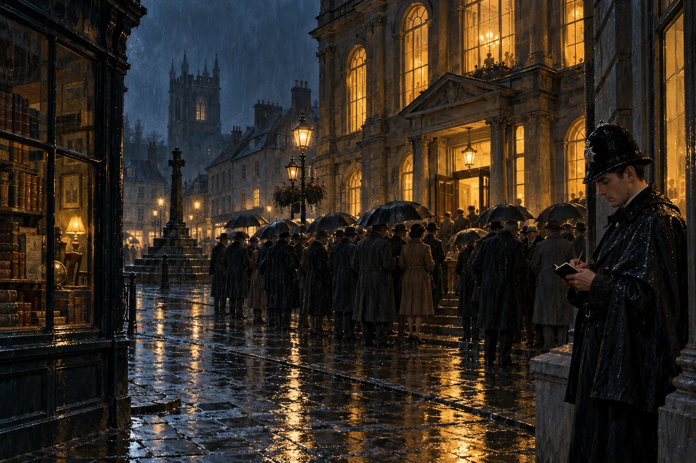

Испытательный срок

Глава первая
Искуси меня, Господи, и испытай меня; расплавь внутренности мои и сердце мое.
— Псалом 25:2
Первого января 1964 года сержант Ноукс прочёл на разводе ориентировку о битых витринах на Кирпичной, о пьяной драке у вокзала и о пропавшей из церкви кружке для пожертвований, которая, по словам викария, пропадала каждый Новый год и каждый Новый год находилась в кустах за оградой, пустая. Потом Ноукс сложил листок, посмотрел вдоль строя и сказал, что у него есть ещё одно объявление, не служебное.
— Констебль Тиллинг, — сказал он, — просил передать всем, кого это касается, что в декабре у него исполняется тридцать лет службы и что на тридцать первый он не остаётся. Просил именно так и сказать: всем, кого это касается. Я не знаю, кого это касается. Меня касается, потому что мне нужен будет человек на дневной второй участок. А кого ещё, думайте сами. Развод окончен.
Кого это касается, в строю знали все, и никто не посмотрел в ту сторону, из деликатности, которая среди констеблей встречается чаще, чем принято думать. Морс тоже не посмотрел в сторону себя.
Тиллинга он нашёл в раздевалке, где старик, сдав ночную смену дежурному за больного Хиггса (с коленями или без, новогоднюю ночь Тиллинг никому не отдавал тридцать лет подряд), медленно расстёгивал китель, пуговицу за пуговицей, как делают работу, которую делают в последний раз. Увидев Морса, он не остановился.
— Слышал, — сказал он. — Всем, кого это касается.
Морс спросил, почему в декабре.
— Потому что присягу я принимал в декабре, — сказал Тиллинг. — И потому, что тридцать лет — это полная пенсия, а тридцать лет и один месяц — это та же пенсия и лишний месяц на коленях. И потому, — он наконец снял китель и повесил его на крючок, — что ты в декабре дослужишь свои два года, и мне хотелось бы посмотреть, что из тебя выйдет. В январе я бы уже не увидел.
Сказал он это так просто, что Морс не нашёлся с ответом. Два года испытательного срока истекали в декабре 1964-го, и до сих пор Морс считал, что помнит об этом один он да отдел кадров. В его личном деле с десятого декабря лежал выговор, и он понимал теперь, что с этим выговором второй год будет не продолжением первого, а переэкзаменовкой.
— Инспектор меня спрашивал, — сказал Тиллинг, садясь на скамейку и берясь за шнурки. — Про тебя. В декабре, после всего. Я сказал, что констебль Морс лучше всех на участке замечает, что не так, и хуже всех понимает, что с этим делать. Он спросил, лечится ли это. Я сказал, что за год увидим.
Он расшнуровал один ботинок, потом второй и на втором остановился, как будто вспомнил что-то.
— И ещё сказал, что ты теперь пишешь в книжку каждую калитку, — добавил он, не поднимая головы. — И что это тоже надо лечить, только не сейчас.
Тут Тиллинг был прав. С декабря служебная книжка констебля Морса располнела вдвое против книжек других констеблей, и сержант Ноукс, расписываясь на точках, теперь не просто расписывался, а читал, как читают чужой дневник, с недоверием и некоторым интересом. В книжке стояло всё: время каждой проверенной двери, номера машин, оставленных на ночь не там, где обычно, свет в окне над булочной в час ночи (у пекаря Артура родилась внучка), кошка на крыше сарая, которая не могла слезть, и та же кошка через час, слезшая. Ноукс сказал однажды, что если так пойдёт дальше, констеблю Морсу придётся выдавать книжку в двух томах, как роман. Морс не ответил. В кабинете главного констебля ему сказали, что констебль без книжки — это человек в синей одежде, и он решил, что человеком в синей одежде больше не будет ни на минуту. Решение было невеликое и довольно смешное, но другого у него пока не было.
Тиллинг надел домашние ботинки, встал, придерживаясь за шкафчик, и сказал, что идёт домой спать, а вечером жена велит смотреть по телевизору новую передачу с пластинками, так что и пенсия, судя по всему, будет не слаще службы.
Вечером в «Короне» та же передача шла над стойкой. Морс видел экран с улицы, сквозь запотевшее стекло: под стройные попрыгивающие звуки девушки танцевали перед камерой, а ведущий объявлял что-то, чего с улицы было не расслышать. В дверях стоял мистер Бакстер. Увидев констебля, он поднял руку, как поднимал её теперь всегда, и сказал через улицу, что музыки в этой передаче никакой нет, один шум, но выручка от неё, признаться, есть.
Морс записал в книжку: «19.10 — «Корона», порядок». Над словом «порядок» он помедлил. После той ночи в ноябре он не заходил в «Корону» ни разу, даже в штатском, и пиво, которое любил, пил теперь в пабе у станции, где его никто не знал в лицо. Это было глупо, и он это понимал, и всё равно не заходил.
На Рыночной площади всё было на своих местах, кроме двух окон. В бывшей лавке Уинча теперь торговали платьем для мальчиков, и в витрине, где когда-то стояли часы, стоял манекен в школьной фуражке, с тем выражением лица, с каким смотрят на мир мальчики, которых сейчас будут фотографировать. А над мануфактурной лавкой олдермена всё ещё висела картонка «Сдаётся». Дональд Фаррел ждал весенней сессии суда присяжных, и в городке рассказывали, что и в тюрьме он по ночам решает кроссворды. Откуда это известно в городке, где никто не бывал в тюрьме, Морс спрашивать не стал.
Из лавок и пивных в ту зиму выходили газеты с известиями из Эйлсбери, где с двадцатого января судили людей с почтового поезда, и пекарь Артур каждое утро пересказывал констеблю прочитанное с таким видом, будто тот несёт за суд личную ответственность. Мистер Хьюитт с ноября больше не переходил улицу, а здоровался кивком, коротким и торжественным, как кивают человеку, с которым вместе пережили катастрофу.
Констебль Хиггс, поправившись, в середине января принёс на развод новость, которую никто не заказывал. Королевская комиссия, сказал он, своё дело сделала, теперь готовят закон о полиции, и дядя его жены, который служит в полиции графства, говорит, что маленькие полиции сольют с большими так же, как сливают старую заварку в новую. Сержант Ноукс спросил, какую заварку Хиггс считает новой. Хиггс не смог ответить, и на этом разговор кончился, но с этого дня слово «слияние» стало в участке неприличным, как слово «рак» в семье, где есть старики.
В конце января, в ночную смену, Морс стоял у синего столба на углу Рыночной площади и считал. Год он прослужил. Оставался ещё год. За первый год он научился слушать двери, научился не ходить одним и тем же путём, научился писать в книжку всё и научился, что самая лёгкая ложь — та, которую не произносишь. Чему он научится за второй год, он не знал. Лампа над столбом не мигала. Городок спал, как спят люди, уверенные, что завтра будет таким же, как сегодня.
Он записал в книжку время и пошёл туда, куда в этот час ещё не ходил.
Глава вторая
Иосиф узнал братьев своих, но они не узнали его.
— Бытие 42:8
Типография Уэйленда стояла в новом городе, на улице, где все здания были построены в одно десятилетие и выглядели так, будто их построили за один день. Над воротами висела вывеска с серифами, какие в типографиях любят делать для себя и никогда не делают для заказчиков. Уэйленд печатал приходские листки, афиши сельскохозяйственных выставок и бланки для совета, но жил не этим. Жил он школьными изданиями классиков: тоненькими книжками в серых обложках, с латинским или греческим текстом сверху и примечаниями снизу, которые лондонские учебные издательства заказывали ему потому, что в Лондоне греческий набор стоил вдвое дороже. Ксенофонт и Цезарь выходили отсюда тысячами и расходились по школам всей страны, и ни один школьник, проклинающий Анабасис, не знал, что проклинает заодно и Каршолл-Ньютаун.
В марте со двора типографии три ночи подряд пропадал свинец. Старый шрифт, стёртый и сбитый, уже не годный в дело, складывали в ящики под навесом, чтобы раз в месяц отправить на переплавку, и три ночи подряд из ящиков исчезало фунтов по сто. Мистер Уэйленд-младший, сын основателя и сам уже лет под шестьдесят, позвонил в участок на четвёртое утро, когда понял, что на переплавку в этом месяце отправлять будет нечего. Сержант Ноукс послал Морса, который в ту неделю ходил в дневную смену, и сказал, что свинец — как раз для человека, который записывает каждую калитку: там тоже всё в буквах.
Уэйленд провёл констебля по двору, показал навес, ящики, калитку в заднем заборе с сломанным замком, который сломали не воры, а время, и ложбину за забором, по которой в темноте можно было увезти на тачке целую типографию. Потом он сказал, что последним вчера уходил корректор, который всегда уходит последним, и что констеблю, наверное, стоит с ним поговорить. Сказал он это по-доброму, но с небольшой заминкой перед словом «корректор», и Морс, который за год научился слышать такие заминки, не понял, что она означает.
Корректорская была на втором этаже, над наборным цехом, и пол в ней мелко дрожал от машин внизу, как палуба. Комната была узкая, с одним высоким окном на крыши нового города, стол стоял у окна, и на столе лежали длинные влажные листы гранок, густо исписанные греческим текстом. Над ними сидел человек в сером свитере с заплатанными локтями, худой, с ранней сединой на висках, в очках, и держал карандаш так, как держат пинцет часовщики. Он поднял голову, когда Уэйленд открыл дверь, посмотрел на констебля, и карандаш в его руке остановился.
Уэйленд сказал, что оставит их, и оставил, прикрыв за собой дверь не до конца.
Морс снял шлем, достал книжку, спросил имя. Пока он делал это, глаза его сами собой скользнули по гранкам на столе, как скользят по чужой газете в поезде, и он увидел третью книгу Анабасиса, и на полях аккуратные корректорские знаки, и в одном месте два ударения, исправленные на полях правильно, и в другом одно, не исправленное вовсе.
— Хейл, — сказал корректор. — Дерек Хейл.
Морс написал имя и только тогда, когда оно уже стояло в книжке его собственным почерком, понял, что написал. Он поднял глаза. Человек за столом смотрел на него спокойно, без улыбки и без вызова, и в его лице, как в тексте со стёртыми буквами, Морс медленно вчитался и прочёл другое лицо, двадцатилетнее, в длинной мантии стипендиата, на хорах часовни Лонсдейла, со взглядом, которого восемнадцатилетний Морс тогда не понимал. Теперь понимал.
— Язычник, — сказал Хейл. Сказал без вопроса, как говорят проверенное слово в кроссворде. — Я вас узнал в дверях. Вы меня нет. Ничего, я изменился сильнее. Там, где я был, люди меняются быстрее, чем в армии.
Он знал про армию. Морс не спросил откуда. Он понял вдруг, что все эти годы Хейл, вероятно, знал о нём больше, чем он о Хейле, потому что тот, кому нечего делать, кроме как думать, всегда знает больше того, которому некогда.
— Вчера вечером, — сказал Морс. Голос у него вышел служебный, и он был за это благодарен своему голосу. — Во сколько вы ушли?
Хейл отвечал на вопросы точно и коротко, как человек, у которого была большая практика. Ушёл в десять минут восьмого, через проходную, как всегда. Двор из корректорской не виден, окно выходит на улицу, а если констебль хочет спросить, не видел ли он кого-нибудь с тачкой, то нет, не видел, а если констебль хочет спросить, не взял ли свинец он сам, то тоже нет, и дома у него тачки нет, и сарая нет, есть комната на Мельничной улице, и хозяйка может подтвердить, что свинца там нет, а есть книги, и что она не одобряет ни того, ни другого.
Морс сказал, что не собирался об этом спрашивать.
— Собирались, — сказал Хейл без злости. — Не вы, так другой. Рано или поздно. Мистер Уэйленд знает, где я был два года, он взял меня с этим знанием, и я ему благодарен. Но когда со двора пропадает свинец, он совершенно искренне приводит полицейского в корректорскую. Это не его вина. Это грамматика. В таких фразах подлежащее всегда одно.
Морс записывал. Он записал всё, что касалось свинца, и ничего, что касалось грамматики, а потом, потому что так велели правила, переписал короткое заявление на отдельный лист и положил перед Хейлом, чтобы тот прочёл и подписал. Хейл прочёл. Взял свой карандаш, и Морс на миг испугался, что тот начнёт править на полях, но Хейл лишь поставил точку там, где Морс её забыл, и расписался.
— Вы пишете за людей правильно, — сказал он, отдавая лист. — Коротко и ничего от себя. Как и тогда. Значит, всё-таки подстрочники. Только теперь для начальства.
Морс сложил лист и убрал в книжку. Был один человек, который сказал ему когда-то про подстрочники и начальство почти те же слова, только по-другому, в тёплой комнате, этажом ниже его собственной, и этого человека уже пять лет не было в живых. Хейл сказал то же самое с другой стороны стола, и с той стороны стола фраза звучала хуже.
— В третьей строке снизу у вас лишнее ударение, — сказал Морс и кивнул на гранки. — В слове перед запятой. Вы его не отметили.
Хейл наклонился над листом. Помолчал. Поставил на полях знак, аккуратно, как ставил все другие.
— Спасибо, — сказал он, не поднимая головы. — Это бесплатно, или теперь тоже по две гинеи?
На лестнице Уэйленд ждал констебля с лицом человека, который что-то слышал через недокрытую дверь и не понял ни слова. Он спросил, всё ли в порядке. Морс сказал, что всё в порядке и что ночью констебль будет проходить по ложбине дважды, и не в одно и то же время. И что замок на калитке стоит поменять. И что корректор свинца не брал.
Уэйленд сказал, что и не думал на него, и покраснел.
Вора взяли через две недели, и взял его не Морс, а скупщик лома из соседнего города, которому показалось странным, что в свинце, который ему привезли на продажу, попадаются греческие буквы. Украл парень с соседнего склада с двоюродным братом. В деле потом лежало заявление, переписанное рукой Морса и подписанное Хейлом, с аккуратной точкой в конце, поставленной чужим карандашом.
Глава третья
Не радуйся ради меня, неприятельница моя! хотя я упал, но встану; хотя я во мраке, но Господь свет для меня.
— Михей 7:8
На Пасху газеты написали про Клактон. В понедельник, тридцатого марта, в приморский городок на восточном побережье съехались молодые люди на мотороллерах и молодые люди на мотоциклах и подрались на пляже, и газеты назвали одних модами, а других рокерами, и на другой день вся страна уже знала, кто есть кто, и те, кому было семнадцать, тоже сразу знали, кто из них кто. Сержант Ноукс прочёл статью на разводе целиком, как ориентировку, и не сказал на этот раз, что в Каршолл-Ньютауне такого не будет никогда. Опыт с «Битлз» научил его осторожности. Он сказал только, что в субботу вечером у кафе при вокзале собирается десятка два наших мальчишек с мотоциклами, и что констеблю второго участка не мешает там иногда показываться, и что на мотороллерах у нас пока никто не ездит, и слава Богу.
Мальчишки у кафе были все знакомые. Половина работала на заводе в новом городе, четверо учились в механическом училище, один, Кевин Доусон, с элеватора, снова купил себе мотоцикл, такой старый, что заводился он с третьего раза и с четвёртого глох. Увидев Морса, Доусон поднял два пальца к виску, не то отдавая честь, не то передразнивая, и Морс, подумав, ответил ему кивком. Никаких восточных побережий в Каршолл-Ньютауне не было, и драться здесь было не с кем: модов на весь город насчитывалось двое, и оба были сыновьями олдермена.
Из кафе с видом на мотоциклы Морс пошёл по Мельничной улице, и не потому, что так сложился маршрут. Он знал, в каком доме живёт Хейл: номер дома был в его книжке с марта, и за три недели он уже четыре раза проходил мимо и четыре раза не останавливался. На пятый раз останавливаться не пришлось: Хейл сидел на низкой каменной ограде перед домом, в пальто и без шляпы, и курил, потому что хозяйка дома не одобряла не только свинца и книг, но и табака.
Из того, что Хейл рассказал в тот вечер и в два следующих вечера на той же ограде, Морс сложил потом историю, которую никому не пересказывал. Весной 1957 года, на выездной сессии суда в Оксфорде, Хейл признал себя виновным в непредумышленном убийстве и получил три года. Отсидел два, скидку за поведение дают всем, кто не бьёт надзирателей, а он не бил. Сначала была тюрьма на севере, где его через неделю прозвали Учёным и стали носить ему письма жён и адвокатов, чтобы он разобрал их и написал ответы. Потом открытая тюрьма, где он полгода копал грядки и читал по вечерам то, что было в библиотеке, то есть Диккенса и каталог семян. Потом два года за прилавком материной табачной лавки, в том самом городке, из которого он когда-то уехал в Оксфорд с самой большой стипендией, какую когда-либо получал выпускник тамошней школы. Покупатели все два года приходили не столько за табаком, сколько посмотреть. Потом мать умерла, лавку продали, а старик Уэйленд, отец нынешнего, после самой короткой в своей жизни беседы взял его корректором, потому что человека, способного читать греческую гранку за жалованье наборщика, не было во всём графстве, а прошлое старик считал делом прошлым.
Университет для него был закрыт. Учительство тоже.
— У меня испытательный срок длиною в жизнь, — сказал Хейл, глядя, как дым сигареты уходит вверх мимо фонаря. — У вас, говорят, два года. Разница невелика, если подумать. Обоих проверяют, не сорвёмся ли. Только вас проверяет начальство, а меня соседи.
Откуда он знал про два года, Морс спрашивать не стал. Про выговор и про то, за что он был, в городке тоже знали все, и Хейл, без сомнения, знал тоже, но ни разу об этом не заговорил, и Морс был ему за это благодарен дольше, чем за что-либо другое.
Они не стали приятелями. Для этого между ними лежало слишком много: крыша колледжа, ночь Гая Фокса, камера на Сент-Олдейтс, где Хейл не назвал одного имени, и кабинет декана, где обладатель этого имени назвал его сам. А ещё лежала простая арифметика, о которой оба думали и оба молчали: оба писали подстрочники за одного и того же человека, одного оштрафовали, а другого посадили. Разница между ними состояла в одном толчке, на крыше, в темноте, и Хейл не знал, хотел ли он его, а Морс не знал, что сделал бы на его месте.
И всё же он останавливался у ограды на Мельничной и дальше, в апреле и в мае, раз в неделю или реже, никогда не в один и тот же день и не в один и тот же час. Разговоры их были короткие и почти всегда не о том, о чём оба думали. Хейл рассказывал про опечатки в Цезаре, которые переходят из издания в издание полвека, потому что каждый наборщик набирает с предыдущего, а не с рукописи, и что так, сказал он, устроена вся печать в мире, включая газеты. Морс рассказывал про двери. Однажды они поспорили о варианте в Хаусмановом Манилии, и спор этот был такой нелепый в темноте на Мельничной улице, между констеблем в шлеме и человеком, отсидевшим за убийство, что оба вдруг засмеялись, и хозяйка Хейла постучала в окно.
Пенхаллоу они не упоминали ни разу. Хейл знал, что тот умер, он сам сказал это в первый же вечер, и тем же тоном, каким сообщают, что закрылся любимый магазин, и больше к этому не возвращался. О том, что Морс был замешан в историю с этой смертью и что из Оксфорда ушёл той же весной, Хейл тоже, по всей видимости, знал, но не спрашивал. Об иных вещах двое стипендиатов из грамматических школ могли молчать так же слаженно, как когда-то пели в хоре.
В мае случился Брайтон. После Троицы газеты три дня печатали фотографии: парни в парках на гальке, парни в кожаных куртках на гальке, и полицейских между ними. В Каршолл-Ньютауне десяток мальчишек из кафе при вокзале теперь назывались рокерами, и в субботу вечером по Рыночной площади теперь проезжали мотоциклы, и миссис Торп сказала Морсу, что мир сошёл с ума и что так и знала.
Хейл на это сказал, что мир сходит с ума в каждом поколении, и каждому поколению требуется полиция, чтобы записать, кто из них кто. Сказал и посмотрел на Морса, как смотрят на человека, которому сказали что-то не то, и не извинился.
В тот вечер Морс записал в книжку время, когда прошёл Мельничную улицу, и разговор записывать не стал. Это была единственная вещь за весь год, которую он не записывал, и потом он не раз думал, правильно ли поступил.
Глава четвёртая
Купи истину и не продавай мудрости и учения и разума.
— Притчи 23:23
Десятого июня закон о полиции получил королевскую санкцию, и констебль Хиггс, дядя жены которого по-прежнему служил в полиции графства, стал на разводах человеком, к которому прислушиваются. Из его рассказов выходило, что с первого июля министр внутренних дел может слить любую полицию с любой другой, не спрашивая ни ту, ни другую, и что комитет стражи, который сто лет командовал полицией Каршолл-Ньютауна, теперь будет только следить, чтобы полиция была действенной, а что такое действенная, решать будет не он. Сержант Ноукс сказал, что полиция Каршолл-Ньютауна всегда была действенной, и что ему интересно было бы посмотреть, как министр внутренних дел снимет кошку с крыши сарая на Кирпичной. Это была лучшая его шутка за год, и он повторил её на трёх разводах подряд.
В июле в уголовный розыск пришёл новый инспектор. Прежний ушёл на пенсию, и комитет стражи, посовещавшись с главным констеблем, взял не своего, а человека из большого промышленного города на севере, потому что, как сказал на заседании комитета один олдермен, полиции, которую собираются сливать, нужно показать, что сливать её не стоит. Детектив-инспектору Харкорту было лет под сорок, он был рослый, свежий, с аккуратным пробором и привычкой говорить о преступности цифрами, и уже в первую неделю вывесил в коридоре участка график раскрываемости за полгода, и линия на нём шла вверх. Лоу, который теперь был у Харкорта сержантом, посмотрел на график, а потом на Морса, который проходил мимо, и сказал, ни к кому не обращаясь, что линия идёт вверх, потому что в ноябре раскрыли одно дело, которое до ноября никто не считал делом.
Лавка Сесила Бартрама стояла в Церковном переулке, в трёх домах от церковной ограды, и Морс проходил мимо неё полтора года и за полтора года заходил в неё раз десять, всегда в штатском и всегда ненадолго, потому что иначе бы там и остался. Над дверью висела доска с выцветшими золотыми буквами: «С. Бартрам. Старые и редкие книги», и старых книг в лавке было много, а редких, по словам самого Бартрама, осталась одна, и на ней он жил, потому что никому её не показывал. Было ему лет под семьдесят пять, он был длинный, согнутый, с пальцами цвета старой бумаги и с привычкой называть цену не сразу, а сначала посмотреть на книгу, потом на покупателя, потом снова на книгу, как будто цена зависела от того, как они друг друга перенесут. Жил он над лавкой один. Жена его умерла давно, а с сыном, который жил в новом городе и продавал подержанные машины, он не разговаривал с тех пор, как тот продал ему одну из них.
В лавке ему помогал Рэй Тьюк, лет под тридцать, приветливый, опрятный, в вязаном галстуке, с ловкими руками человека, который умеет завернуть книгу в бумагу так, что её жалко разворачивать. Тьюк был в лавке шесть лет, знал покупателей по именам и книги по полкам, а по вечерам сидел в городском комитете лейбористов и писал адреса на конвертах, потому что, как он сказал Морсу однажды, где-то в октябре страна наконец проснётся, и кто-то должен её разбудить. Выборы ещё не были назначены, но все знали, что осенью они будут, потому что позже их уже нельзя было устроить.
В первой неделе июля Морс шёл по Церковному переулку в дневную смену и по привычке скользнул взглядом по витрине Бартрама. В витрине лежали те же книги, что лежали всю весну: два тома старого графского справочника, атлас птиц, раскрытый на фазане, и ряд корешков, выцветших от солнца до одного цвета. И среди них, с краю, новая: толстая тёмная книга в потёртом переплёте, с оттиснутым на корешке словом «HOMERI».
Морс остановился. Лейпцигских изданий Гомера в мире было тысячи, и каждый классический тьютор в Англии за сто лет оставил после себя хотя бы одно, и ничего удивительного не было в том, что одно из них оказалось в витрине провинциального букиниста. И всё же он дождался конца смены, переоделся и вернулся в Церковный переулок за пять минут до закрытия.
Тьюк достал книгу из витрины, сдул с неё пыль, которой там не было, и положил на прилавок. Морс открыл её и сразу увидел две вещи. На форзаце, выцветшими чернилами, крупным учительским почерком было написано по-латыни: «Дереку Хейлу, который пойдёт дальше меня», и год — 1954. А внизу, другой рукой, мелко и сухо, как пишут на полях: «И. П., Лонсдейл, 1957». И ещё одна вещь, третья, такая незаметная, что Морс увидел её с опозданием: в верхнем углу форзаца карандашом, печатными буквами, стояло три буквы и косая черта.
Буквы ничего не значили. Слова из них не складывалось. И именно потому, что ничего не значили, они показались бывшему шифровальщику знакомыми, как знаком почерк, которого не можешь прочесть. Он взял с ближней полки какой-то роман и открыл. Там в том же углу стояли две буквы и черта, а ниже обычными цифрами цена: два шиллинга шесть пенсов.
— Это мистер Бартрам, — сказал Тьюк, проследив за его взглядом, с улыбкой человека, которого такой вопрос спрашивают не в первый раз. — У него свой шифр. Сколько заплатил. У старых книжников у всех так. Десять букв вместо десяти цифр, и никто не знает каких. Я шесть лет спрашиваю, а он шесть лет говорит, что скажет в завещании.
Из задней комнаты вышел сам Бартрам, с вечным пером в руке, и посмотрел на книгу, потом на Морса, потом снова на книгу.
— Три гинеи, — сказал он. — Из библиотеки оксфордского дона. На полях его заметки, и заметки, скажу вам, дельные. Без заметок книга стоила бы три шиллинга. Люди платят за чужие мысли дороже, чем за Гомера, это вам любой издатель скажет.
Морс спросил, откуда у него книга. Бартрам сказал, что купил весной партию у оксфордского торговца, который пять лет назад взял всю библиотеку старика, и что лучшее тот давно распродал, а остатки теперь расходятся по провинции, как всегда расходятся библиотеки: сначала книги, потом имя, потом память, что они когда-то стояли вместе. И спросил, не завернуть ли.
Морс посмотрел на форзац. Три гинеи были для него деньгами заметными, но не непосильными. Но на форзаце стояло не его имя. Он сказал, что подумает, и Бартрам кивнул с видом человека, который слышал эту фразу сто тысяч раз и ни разу не поверил.
У него были две недели, чтобы решить, сказать ли Хейлу. Он не решил. В середине июля, проходя мимо лавки в ночную смену, он увидел, что книги в витрине нет, а следующим вечером, на ограде на Мельничной, Хейл сказал ему сам, не поворачивая головы:
— Вы видели её раньше меня. Тьюк сказал, что какой-то молодой человек в штатском с лицом констебля обещал подумать. Я догадался.
Морс спросил, купил ли он.
— В рассрочку, — сказал Хейл. — По пять шиллингов, раз в неделю, а когда не выходит, то реже. Бартрам держит её для меня на полке в задней комнате и даёт квитанции, написанные вечным пером, как в банке. К середине октября выплачу. Двенадцать по пять и один по три. Я посчитал.
Он помолчал и добавил, что на полях четырёх стихов из девятой песни стоит пометка Пенхаллоу, одно слово, и что три гинеи за это слово — дёшево. Какое слово, он не сказал, а Морс не спросил.
Глава пятая
Скажи им: живу Я, говорит Господь Бог: не хочу смерти грешника, но чтобы грешник обратился от пути своего и жив был.
— Иезекииль 33:11
Тринадцатого августа в восемь утра в двух тюрьмах на севере, в Ливерпуле и в Манчестере, повесили двух молодых людей, которые весной убили в камберлендском городке водителя фургона, которого пришли ограбить. В газетах об этом написали коротко, на внутренних страницах, потому что такие заметки в те годы печатали всегда коротко, и никто из тех, кто читал их тогда в автобусах и за завтраком, не знал, что читает заметку, которой больше не будет.
Морс прочёл её в дежурке, в газете, которую кто-то оставил на столе под пресс-папье. Из заметки он узнал четыре вещи: имена, возраст, что прошения о помиловании отклонены и что у тюремных ворот стояло несколько человек. Пятую вещь он знал и без заметки. В школе в Эйншеме им читали Закон об убийстве пятьдесят седьмого года, и он помнил пять случаев, в которых за убийство по-прежнему вешали, в том порядке, в каком их диктовал инструктор. Первым из пяти было убийство в ходе кражи или ради неё.1
Инструктор тогда сказал, что закон написан для того, чтобы вешать профессионалов и не вешать ревнивых мужей, и что с ревнивыми мужьями он получился лучше, чем с профессионалами. Кто-то из курсантов спросил, что будет, если ревнивый муж заодно заберёт у соперника бумажник. Инструктор сказал, что тогда его повесят, и что именно такие вопросы и нельзя задавать на экзамене.
Вечером Морс проходил по Мельничной. Хейл сидел на ограде. На коленях у него лежала та же газета, сложенная так, чтобы заметки не было видно, и он не курил. Морс остановился. Они некоторое время молчали.
— В такие утра там тихо, — сказал наконец Хейл. — Во всей тюрьме. Никто не стучит, никто не зовёт надзирателя. Кроме одного человека, который ничего не слышит, все слушают. Я одно такое утро застал. Первой зимой.
Морс ничего не сказал.
— У меня в суде был старик-адвокат, — продолжал Хейл. — Настаивал, чтобы я признал непредумышленное. Я спрашивал, почему он так уверен, что непредумышленное, если я сам не уверен. Он сказал, что моя уверенность никого не интересует, а интересует одно: были ли у меня в кармане чужие деньги. Денег не было. Были листки с подстрочниками, и те мои собственные. Будь там пять фунтов Эшкомба, сказал старик, никакого непредумышленного у нас с вами бы не было. Было бы тихое утро.
Он развернул газету, сложил её по-другому и положил рядом на ограду.
— Этим двоим не хватило пяти фунтов, чтобы их не было, — сказал он. — Или их было слишком много, как посмотреть. Вы полицейский, вы знаете лучше.
Морс сказал, что не знает. Это была правда. За полтора года службы он видел одного убитого и одного убийцу, и убийца тоже не знал, толкнул он или не толкнул, и полиция не знала, и в апреле присяжные на выездной сессии тоже не знали и поэтому признали Дональда Фаррела виновным в непредумышленном убийстве и в растрате, и судья дал ему семь лет. Расписка номер сорок девять, которую он сжёг, была не деньгами, и в кармане у него не лежала. В те недели Морс не раз думал о том, что листок бумаги без цены и пять фунтов в бумажнике разнятся между собой на жизнь человека, и ни до чего утешительного не додумался.
— Лейбористы обещают свободное голосование, — сказал Хейл. — Если выиграют. Тьюк из лавки мне всю неделю об этом рассказывает, когда я приношу свои пять шиллингов. Он считает, что я должен за них голосовать из личной заинтересованности. Я сказал ему, что меня уже не повесили, и личной заинтересованности у меня больше нет. Он смеялся. Он очень легко смеётся, Тьюк.
Морс спросил, много ли осталось.
— Семь раз по пять и один по три, — сказал Хейл, и сказал не задумываясь, как говорят число, которое пересчитывают каждый вечер. — Квитанции у меня в книге лежат, в другой. В Ксенофонте. Там им самое место, там всё про то, как добираться домой.
В ту же ночь, в ночную смену, Морс проходил по Церковному переулку в половине одиннадцатого, и в задней комнате у Бартрама горел свет. Сквозь пыльное стекло и два ряда книг было видно, как старик сидит за столом с большой книгой в тёмном переплёте, а рядом с ним на столе стоит чёрная жестяная шкатулка и столбики монет. Морс записал в книжку: «22.30 — Церк. пер., Бартрам, свет в задн. комн. (касса)». На следующей неделе он прошёл там в то же время, и там было то же самое. Тьюк, когда он спросил, объяснил: старик каждый вечер в половине одиннадцатого пересчитывает кассу и записывает её в книгу своим шифром, как и всё остальное, а потом убирает шкатулку туда, куда убирает, а куда именно, Тьюк за шесть лет так и не узнал. Сказал он это со смехом, легко, как и всё, что говорил.
Морс слышал этот смех и дослушал до конца, но ничего в нём не услышал. Двери он слушать за полтора года научился. Людей ещё нет.
Глава шестая
С рассветом встает убийца, умерщвляет бедного и нищего, а ночью бывает вором.
— Иов 24:14
Выборы назначили на четверг, пятнадцатое октября, и в четверг с утра пошёл дождь. Пошёл он не сильно, но надолго, и к вечеру в городке говорили, что из-за дождя половина стариков осталась дома, а какая половина и за кого бы она проголосовала, каждый говорил по-своему.
Считать голоса в Каршолл-Ньютауне собирались только утром. Ночью ящики свозили со всех участков округа в ратушу на Рыночной площади, вносили по одному в зал совета, и там они стояли под замком до утра, а у дверей стоял констебль. Сержант Ноукс поставил к дверям Морса, потому что, как он сказал, констебль, который записывает каждую калитку, запишет и каждый ящик, а дверь ратуши ничем не хуже калитки. В пару к нему дали Хиггса. Хиггс взял с собой термос.
Участки закрылись в девять. Через десять минут из деревень начали приходить машины, и первые ящики, мокрые, обвязанные бечёвкой, с сургучом на щелях, понесли по ступеням мимо Морса. Под навесом у входа толклись люди: от обеих партий по нескольку человек с розетками на лацканах, которые смотрели, чтобы ящики шли куда следует, и просто зрители, человек тридцать, под зонтами, которые смотрели на тех, кто смотрел. Среди лейбористов был Рэй Тьюк, в вязаном галстуке и без шляпы. Пальто своё он оставил на стуле в вестибюле, рядом с другими пальто, и то и дело выбегал под навес и забегал обратно, считал ящики и записывал что-то в блокнот, и смеялся, и на волосах у него блестела вода.
Смотритель ратуши держал в своей каморке у входа транзисторный приёмник, и в девять часов, когда закрывались участки, Морс услышал через приоткрытую дверь каморки, как диктор девятичасовых новостей говорит не о выборах, а о Москве. Хрущёва сместили. Смотритель вышел под навес и сообщил это всем сразу, громко, как объявляют о пожаре. Кто-то из консерваторов сказал, что это к лучшему, кто-то из лейбористов сказал, что это ничего не значит, и Тьюк сказал, что в один вечер две страны меняют правительство, и одна из них хотя бы спросила своих граждан. Над этим засмеялись все, даже консерваторы.
В девять сорок пять Морс увидел Хейла.
Хейл шёл через площадь со стороны Церковного переулка, без зонта, подняв воротник, и держал под мышкой, прижав локтем к боку, свёрток в коричневой бумаге, перевязанный бечёвкой крест-накрест. Свёрток был плоский и тяжёлый, по тому, как его держали, видно было, что тяжёлый. Хейл прошёл мимо навеса, через толпу, не замедлив шага, увидел констебля у дверей и кивнул ему, коротко, как кивают в коридоре знакомому, с которым незачем останавливаться. На лице у него было выражение, какого Морс за полгода у него не видел ни разу, и только потом, уже записав, Морс понял, что это было за выражение. Так выглядят люди, которые что-то выплатили до конца.
Морс записал: «21.45 — Д. Хейл, через толпу у ратуши, со свёртком (от Церк. пер., к Мельничной ул.)». Хиггс, заглянув ему через плечо, спросил, зачем записывать человека, который просто прошёл мимо. Морс сказал, что все люди просто проходят мимо, пока что-нибудь не случится. Хиггс подумал и налил себе из термоса.
В десять по радио объявили первый результат откуда-то с юга, и под навесом закричали «ура», причём, к общему смущению, с обеих сторон, потому что не все расслышали, кто взял место. Потом пошли результаты один за другим, с перерывами, в которых диктор говорил о дожде и о явке. Смотритель вынес приёмник на подоконник вестибюля и открыл окно, и теперь вся площадь слушала, как где-то далеко считают то, что здесь будут считать только утром.
В половине одиннадцатого Морс поймал себя на том, что смотрит на часы ратуши. Ничего особенного в половине одиннадцатого не было, если не считать того, что в задней комнате в Церковном переулке старик в это время садился пересчитывать кассу, и Морс знал это потому, что дважды записал. Он отметил про себя, что думать о чужой кассе, стоя у дверей с ящиками для голосования, есть именно та привычка, которую инспектор советовал лечить, и стал думать о ящиках.
В десять сорок Тьюк выбежал из вестибюля без пальто, сказал на ходу кому-то из своих, что сейчас вернётся, и побежал через площадь в сторону Церковного переулка, пригибаясь под дождём, как пригибаются, когда думают, что так меньше намокнут. Морс записал: «22.40 — Р. Тьюк из ратуши, без пальто, к Церк. пер.». В пять минут двенадцатого Тьюк вернулся, мокрый, отряхиваясь, поднялся по ступеням мимо Морса и сказал ему весело, что всё в порядке, у лейбористов пока всё в порядке. Морс записал: «23.05 — Р. Тьюк обратно». Время на часах ратуши и время на его собственных часах расходились на минуту, и он отметил это тоже.
Около полуночи приёмник на подоконнике сообщил, что лейбористы впереди. Под навесом у лейбористов захлопали, у консерваторов кто-то сказал, что ночь длинная. Тьюк снова вышел, на этот раз надев пальто, и сказал, ни к кому в отдельности не обращаясь, что пойдёт обрадует старика, который всю жизнь голосовал за тори, а сегодня ради такого случая сидит у приёмника и не ложится, и пусть-ка послушает это от сотрудника лично. Под навесом засмеялись. Морс записал: «23.52 — Р. Тьюк к Церк. пер. (сказать Бартраму)».
В полночь без двух минут Тьюк выбежал из Церковного переулка на площадь, без шляпы, с распахнутым пальто, и бежал он уже не пригибаясь. Он увидел констебля у дверей ратуши и побежал прямо к нему, через площадь, по лужам, и люди под навесом расступились, ещё не понимая, что случилось.
Морс записал его первые слова потом, через несколько минут, но записал дословно, потому что ещё в декабре прошлого года решил, что первые слова записывает всегда, а слова эти были такие:
— Констебль. Он там, в задней комнате. Мистер Бартрам. Его ударили, он не дышит. Шкатулки нет. Я ничего не трогал. Я только вошёл и увидел.
Морс сказал Хиггсу остаться у ящиков и никого не впускать, а смотрителю позвонить в участок. Потом он пошёл в Церковный переулок, быстро, но не бегом, а Тьюк шёл рядом и говорил. Он говорил, что дверь была не заперта, а старик всегда запирает, что свет горел в задней комнате, что приёмник говорил сам с собой, что он сразу понял. Морс слушал и не перебивал.
Дверь лавки и правда была не заперта. Колокольчик над ней звякнул так же, как звякал днём, и от этого звука Тьюк вздрогнул. В лавке было темно, пахло пылью и мокрой бумагой, и в глубине, за двумя рядами полок, светилась дверь задней комнаты.
Бартрам лежал на полу между столом и стеной, на боку, с подвёрнутой под себя рукой, и пальцы другой его руки, цвета старой бумаги, были разжаты. Голова его лежала в тёмной луже, которая уже не растекалась. На столе горела лампа под зелёным абажуром, рядом стоял приёмник и негромко называл какой-то округ на севере, и лежала раскрытая большая книга в тёмном переплёте, а поперёк неё — вечное перо со снятым колпачком. Стул был отодвинут от стола. Больше на столе ничего не было.
Морс не стал входить дальше порога. Он наклонился, не наступая в лужу, и коснулся запястья старика двумя пальцами, как учили в Эйншеме, и подержал, хотя знал всё с первого взгляда. Рука была холоднее, чем бывает у живых, но не настолько холодная, как бывает у мёртвых долго. Он посмотрел на свои часы. Было без одной минуты двенадцать, а по часам ратуши ровно двенадцать.
Потом он посмотрел на полку над столом, на которой, как сказал ему в июле Хейл, Бартрам держал для него «Илиаду», пока не будет выплачено. Полка была пустая, и пыль на ней лежала ровно, кроме одного прямоугольника, где пыли не было.
Тьюк стоял в дверях лавки, в темноте, и не входил. Он сказал, что не может на это смотреть. Морс сказал, что смотреть и не надо, а надо стоять там, где стоит, и ничего не трогать, и что скоро придут. Тьюк сказал «да, конечно» и остался стоять, и в темноте было слышно, как он дышит.
Морс достал книжку и записал: «00.00 (по ч. ратуши) — Церк. пер., лавка Бартрама, дверь не заперта. С. Бартрам на полу в задн. комн., признаков жизни нет. На столе книга (раскрыта), перо без колпачка, лампа, приёмник (вкл.). Шкатулки на столе нет». Над последними словами он помедлил, как помедлил в январе над словом «порядок», и потом, ниже, отдельной строкой, записал слова Тьюка, все, как были сказаны, от «Констебль» до «и увидел».
Приёмник на столе сказал, что в ещё одном округе место перешло к лейбористам. Где-то на площади за переулком закричали «ура».
Глава седьмая
Оправдывающий нечестивого и обвиняющий праведного — оба мерзость пред Господом.
— Притчи 17:15
Сержант Ноукс пришёл в Церковный переулок через двенадцать минут после звонка, в плаще поверх кителя, и первым делом спросил у Морса, что тот трогал. Морс сказал: запястье, двумя пальцами. Ноукс кивнул, заглянул в заднюю комнату с порога, так же, как заглянул Морс, и дальше порога тоже не пошёл. Потом он поставил Морса у двери лавки, а Тьюка увёл через переулок в его, Тьюка, комнату над табачной лавкой, где тот снимал жильё, и велел сидеть там и ждать.
Детектив-инспектор Харкорт приехал в половине первого, сержант Лоу через десять минут после него, а полицейский хирург, которого подняли с постели, около часу. Хирург пробыл в задней комнате недолго. Выходя, он сказал Харкорту, что удар был один, сзади и сверху, тяжёлым предметом с ребром, что смерть наступила быстро и что время он назовёт часа на два плюс-минус, и пусть инспектор не ждёт от него большего, потому что в такой холодной лавке покойники остывают по своим законам. Тяжёлый предмет с ребром лежал под столом. Это был старый чугунный переплётный пресс, который Бартрам держал на углу стола, чтобы класть под него книги с отставшими корешками. Пресс был чистый. Чище, чем всё остальное в лавке.
Морс простоял у двери до шести утра. Дождь кончился около трёх. В четыре на площади погасили свет в ратуше, где ящики стояли под замком и под охраной Хиггса, а в пять мимо Морса прошёл молочник и спросил, правда ли. Морс сказал, что не может ничего сказать. Молочник сказал, что значит правда, и пошёл дальше, и к семи утра об этом знал весь Церковный переулок, а к восьми весь город.
В девять Харкорт собрал в комнате уголовного розыска всех, кто имел к делу хоть какое-то отношение: Лоу, двух детективов-констеблей, сержанта Ноукса и, после некоторого раздумья, Морса. Морс сидел у двери на стуле, который ему не предложили, а показали, и держал на коленях шлем.
Харкорт говорил стоя, у доски, на которой ещё висел его график раскрываемости, и говорил так же, как говорил о графике, цифрами. Убитому семьдесят четыре года. Удар один. Пропала чёрная жестяная шкатулка, в которой убитый держал выручку, по словам помощника фунтов десять-двенадцать за неделю, иногда больше. Дверь не взломана. Убитый никому не открыл бы ночью, кроме знакомого. Время смерти, по хирургу, от десяти вечера до полуночи, по двум другим вещам точнее. Помощник видел его живым около шести, когда уходил на выборы. В полночь помощник нашёл его мёртвым.
— Остаётся книга, — сказал Харкорт.
Книга лежала у него на столе в бумажном пакете, раскрытая на последней исписанной странице. Это был гроссбух в тёмном переплёте, тот самый, над которым Морс в августе видел старика сквозь пыльное стекло. Лоу, в перчатках, повернул его так, чтобы видели все. Страницы были разлинованы от руки на четыре столбца. Слова Бартрам писал обычными буквами, мелко, с наклоном, а всё, что было числом, записывал буквами печатными, теми же, что стояли в углах форзацев, и эти буквы не складывались ни во что.
Последние строки за пятнадцатое октября были такие: «Х., Илиада, расчёт» и рядом три печатные буквы, а ниже, отдельно, «касса» и рядом ещё десяток печатных букв в два ряда. Больше в тот день ничего не было.
— Х., — сказал Харкорт. — Помощник говорит, что это Хейл. Дерек Хейл, корректор у Уэйленда. Брал у старика книгу в рассрочку с лета, вчера должен был отдать последний взнос и забрать книгу. Книги на полке в задней комнате нет. Помощник говорит, что вчера днём старик ему сказал, что Хейл придёт вечером. В двадцать один сорок пять, — он заглянул в бумагу на столе, — констебль Морс видел Хейла на Рыночной площади со свёртком. Констебль Морс?
Морс встал и прочёл вслух из книжки: «21.45 — Д. Хейл, через толпу у ратуши, со свёртком (от Церк. пер., к Мельничной ул.)». Харкорт кивнул и сказал, что этого достаточно. Морс сказал, что у него записано ещё.
— Что ещё?
Морс прочёл: «22.40 — Р. Тьюк из ратуши, без пальто, к Церк. пер.». И «23.05 — Р. Тьюк обратно». И «23.52 — Р. Тьюк к Церк. пер. (сказать Бартраму)».
В комнате стало тихо. Лоу посмотрел на Морса так, как смотрел в декабре прошлого года, через стол в задней комнате «Короны», с тем же коротким, непроницаемым интересом. Харкорт сказал, что это ему известно. Помощник сам сказал, что выбегал около одиннадцати к себе за сигаретами, через переулок, на двадцать минут, и что на лавку не смотрел, потому что шёл под дождём, не поднимая головы. Помощник нашёл тело. Помощник поднял тревогу. Помощник помогает следствию. А у Хейла, сказал Харкорт, есть то, чего у помощника нет.
Он не стал говорить, что именно. Это знали все в комнате и половина города.
— Ограбление и убийство, — сказал Харкорт и написал на доске, рядом с графиком, одно слово по-английски, которое Морс в последний раз видел в газете тринадцатого августа. — Тяжкое. Палата общин может делать что хочет, когда соберётся, но пока она не собралась, закон тот же, что был в августе. Я хочу, чтобы все это понимали. Это не кража свинца.
Потом он сказал про шифр. Помощник, сказал он, шесть лет просил старика открыть шифр и шесть лет слышал, что тот откроет его в завещании. Помощник, однако, кое-что знает. Помощник знает, что последний взнос у Хейла был три шиллинга. Помощник думает, что три буквы рядом с «Илиадой» и есть эти три шиллинга. А десять букв рядом со «кассой» — сумма за день, которую старик пересчитал и которую унёс убийца. Помощник думает, что старик пересчитывал кассу при Хейле, потому что вчера из-за выборов закрыл лавку рано. Хейл видел деньги.
— Помощник много думает, — сказал Лоу, ни к кому не обращаясь.
Харкорт сказал, что помощник шесть лет работал в лавке и знает старика лучше всех, и что если сержанту Лоу есть что сказать, пусть скажет по существу. Лоу сказал, что по существу ему сказать нечего.
Морс не сказал, что в августе, когда он спрашивал, Тьюк объяснил ему, что старик пересчитывает кассу каждый вечер в половине одиннадцатого. В книжке у него этого не было, потому что объяснения он в книжку не записывал, только то, что видел своими глазами. Своими глазами он видел свет в задней комнате в половине одиннадцатого два раза, в августе, и то, что Бартрам считал деньги в половине одиннадцатого в августе, не значило, что он считал их в половине одиннадцатого пятнадцатого октября. Он это понимал. Он понимал и то, что констебль второго года службы, который в комнате уголовного розыска поднимет руку и скажет «а мне Тьюк говорил по-другому», будет знаменит в участке до конца испытательного срока, который тогда, скорее всего, наступит раньше декабря.
Он ничего не сказал и сел.
Когда все расходились, Харкорт попросил его задержаться и сказал, что у констебля хорошие записи и что их перепечатают как показания, а констебль подпишет. И что констеблю пора спать, потому что вечером ему снова в смену. Морс сказал «да, сэр».
В коридоре его догнал Лоу. Он шёл рядом до самой лестницы и молчал, а у лестницы сказал, глядя не на Морса, а в окно на площадь, где у ратуши с утра собиралась толпа смотреть, как будут выносить результат подсчёта:
— Хорошая привычка у вас, констебль. Записывать. Я бы на вашем месте её не бросал. Особенно теперь.
И пошёл назад.
Морс спал в тот день четыре часа, а когда проснулся, по радио у хозяйки говорили, что лейбористы получили большинство в четыре места и что мистер Вильсон едет во дворец. Он долго лежал и смотрел в потолок и думал не о мистере Вильсоне, а о трёх печатных буквах рядом с «Илиадой» и о десяти буквах рядом с «кассой» в два ряда, и о том, почему касса в два ряда, если сумма одна.
Глава восьмая
Ты видишь, Господи, обиду мою; рассуди дело мое.
— Плач Иеремии 3:59
За Хейлом пошли в тот же день, в пятницу, в пять часов, и пошли не в типографию, а на Мельничную, потому что Харкорту нужен был не только Хейл, но и его комната. Морса взяли с собой. Харкорт объяснил это тем, что констебль знает дом и знает человека в лицо, а Лоу по дороге, в машине, не объяснил ничего, только один раз оглянулся на Морса с переднего сиденья, и Морс понял, что объяснение есть, и другое. Констебль, который сам придёт за человеком, с которым по вечерам сидел на ограде, потом уже не скажет, что его там не было.
Хозяйка, миссис Галли, открыла дверь, увидела троих мужчин, из которых один был в форме, и ничего не спросила. Она сказала только: «Наверху» — и ушла на кухню, и на кухне что-то упало и разбилось.
Хейл сидел за столом у окна, в том же сером свитере с заплатанными локтями, и перед ним лежала раскрытая «Илиада». Коричневая бумага и бечёвка лежали рядом, сложенные аккуратно, как складывают вещи, которые ещё пригодятся. Комната была маленькая, с узкой кроватью, с газовой плиткой в углу, и почти вся в книгах: книги на полках из досок и кирпичей, книги стопками на полу, книги на подоконнике. Хозяйка не преувеличивала, когда говорила, что не одобряет.
Хейл посмотрел на Харкорта, потом на Лоу, потом на Морса, и на Морсе задержался.
— Я слышал утром, — сказал он. — В типографии все слышали. Мистер Уэйленд отпустил меня в обед. Сказал, что сегодня гранок нет. Гранки есть. Я ждал вас с двух часов.
Харкорт спросил, он ли Дерек Хейл, и когда тот ответил, что да, спросил, как к нему попала книга на столе.
Хейл рассказал. Вчера, в четверг, после работы, он сходил на участок и проголосовал, а за кого, не скажет, потому что тайна голосования распространяется и на него. Потом поужинал дома. Около девяти вышел и пошёл в Церковный переулок, потому что старик Бартрам сам назначил ему этот час: днём в день выборов лавку будет караулить один, Тьюк уйдёт к своим лейбористам, покупателей не будет, а если Хейл хочет забрать своего Гомера, пусть приходит вечером и стучит в стекло. Он постучал в стекло в девять часов с четвертью или немного позже. Старик открыл, провёл его в заднюю комнату, взял три шиллинга, написал последнюю квитанцию и что-то записал в свою книгу, снял «Илиаду» с полки и сам завернул её, долго и плохо, потому что заворачивать умел Тьюк, а не он. Разговаривали они минут десять. Старик сказал, что заметки на полях он читал все до одной и что три гинеи взял с него по совести, а мог бы взять и пять. Денег, кроме его трёх шиллингов, Хейл на столе не видел, и шкатулки тоже. Он ушёл через площадь, прямо домой. Констебль его видел. Больше он из дома не выходил.
Харкорт спросил, кто может это подтвердить.
— Никто, — сказал Хейл. — Миссис Галли весь вечер была у сестры на Кирпичной, у сестры телевизор, а вернулась в час ночи. Я сидел и читал. Вы сами видите что. Это тоже никто не подтвердит, кроме него, — и он кивнул на книгу, — а он свидетель ненадёжный, его самого веками проверяют на подлинность.
Лоу спросил про квитанции. Хейл встал, взял с полки тонкого серого Ксенофонта уэйлендовской печати, и из Ксенофонта выпала пачка узких листков, исписанных вечным пером, тем самым почерком, мелким и наклонным, которым была написана книга с четырьмя столбцами. Тринадцать листков. На каждом дата, «Хейлу, за «Илиаду» (Лейпциг), в счёт трёх гиней», сумма обыкновенными цифрами и подпись «С. Б.». На последнем, вчерашнем, вместо «в счёт» было написано «расчёт полный».
Лоу пересчитал листки, сложил в конверт и написал на конверте, что это. Харкорт тем временем смотрел форзац «Илиады», латинскую надпись, которую не мог прочесть, и ниже надпись «И. П., Лонсдейл, 1957», которую прочесть мог, и спросил, что это за И. П. Хейл сказал, что это человек, который научил его читать эту книгу, и что человека этого уже нет. Харкорт спросил, что значит «в тысяча девятьсот пятьдесят седьмом». Хейл сказал, что в тысяча девятьсот пятьдесят седьмом инспектору лучше посмотреть в архиве выездной сессии в Оксфорде, там всё записано точнее, чем он сможет рассказать.
— Я смотрел, — сказал Харкорт.
Обыск длился час. Лоу и детектив-констебль, которого вызвали снизу, сняли с полок все книги, перелистали их и поставили обратно, и поставили не так, как стояло, и Хейл смотрел на это и ничего не говорил. Просмотрели пальто, ботинки, матрас, газовую плитку, заглянули под половицу, которая шаталась. Шкатулки не было. Денег нашли два фунта семь шиллингов в жестянке из-под чая, и Хейл сказал, что это до четверга и что в четверг ему платят жалованье, так что инспектор может спросить у Уэйленда, сколько. Крови ни на чём не было видно. Харкорт велел забрать пальто и ботинки для лаборатории, а когда Лоу спросил, везти ли их в Оксфорд или в Бирмингем, сказал, что куда быстрее.
В семь часов Харкорт сказал, что Дерек Хейл поедет с ними в участок, и сказал те слова, которые в таких случаях полагается сказать. Хейл выслушал их так, как слушают текст, заученный в детстве, чуть шевеля губами вместе с инспектором. Потом попросил разрешения взять с собой книгу. Харкорт сказал, что книга едет с ними в любом случае, только в другом качестве. Хейл кивнул, как кивают, когда ответ был известен заранее.
У двери он остановился и спросил Морса, не понижая голоса:
— Вы записали?
Морс сказал, что записал.
— Что?
Харкорт сказал, что констебль не обязан отвечать. Морс ответил, потому что то, что у него было записано, уже знали все в комнате, кроме одного, и скрывать это от одного показалось ему неприличным.
— Что вы шли в девять сорок пять от Церковного переулка к Мельничной. Со свёртком.
Хейл подумал.
— Значит, правильно записали, — сказал он и вышел на лестницу первым, не дожидаясь, пока его возьмут под руку.
В субботу Дереку Хейлу предъявили обвинение в убийстве Сесила Бартрама, совершённом в ходе кражи, а в понедельник мировые судьи отправили его под стражу в тюрьму в Оксфорд. В зале суда было тесно. Слушание заняло четыре минуты, и за четыре минуты Хейл не сказал ничего, кроме своего имени и слова «невиновен». Миссис Торп, которая сидела во втором ряду, сказала потом на Рыночной площади, что всегда говорила: кто убил один раз, тот убьёт и второй, и нечего было старому Уэйленду брать таких на работу. В пекарне Артур с ней не спорил, но и не соглашался, а на следующее утро не стал пересказывать Морсу газету.
В понедельник же вечером Морс прошёл по Мельничной. На ограде никто не сидел. В окне наверху было темно. Он записал в книжку время и долго держал карандаш над бумагой, и потом написал рядом со временем то, что видел: «Мельн. ул., порядок». Это тоже была правда.
Глава девятая
Горе тем, которые зло называют добром, и добро — злом, тьму почитают светом, и свет — тьмою, горькое почитают сладким, и сладкое — горьким!
— Исаия 5:20
Показания принесли во вторник, двадцатого, перед дневной сменой. Их принёс детектив-констебль Брэй, тот самый, которого в пятницу вызвали на Мельничную перелистывать книги, молодой, лет на пять старше Морса, в хорошем пиджаке, с лицом человека, который тоже когда-то ходил в форме и не скучает по ней. Он положил на стол в дежурке два листа, отпечатанные через копирку, и раскрытую авторучку рядом.
— Распишись внизу, — сказал он. — И на каждой странице в углу. Инспектор хочет, чтобы всё было чисто.
Морс сказал, что сначала прочтёт. Брэй пожал плечами и сел на край соседнего стола.
Показания были написаны хорошо. Так думал Морс, когда читал первую страницу, и не перестал так думать и дальше. В них были дата, место, время, в них были те слова, которыми пишут показания во всех участках страны, и не было ни одного лишнего. Я находился на посту у главного входа ратуши. В 21.45 я видел известного мне Дерека Хейла. Он нёс свёрток в коричневой бумаге. Он шёл через Рыночную площадь в направлении Церковного переулка.
Морс прочёл эту фразу ещё раз. Потом он прочёл до конца вторую страницу, где были полночь, задняя комната, запястье двумя пальцами и пустая полка, и не нашёл там двадцати двух сорока, двадцати трёх пяти и двадцати трёх пятидесяти двух. Вместо них стояло: «В течение вечера я видел также других лиц, входивших в ратушу и выходивших из неё, в том числе сотрудников партийных комитетов».
В направлении Церковного переулка. Ничего не было проще, чем ошибиться так, перепечатывая с чужого почерка «от Церк. пер.», и ничего не было труднее, чем ошибиться так и заодно забыть «к Мельничной ул.». И Морс понимал, что значит эта ошибка, и удивлялся только тому, как спокойно понимает. Хирург сказал: от десяти до полуночи. Человек, который в девять сорок пять уходит из Церковного переулка домой, в эти два часа попадает только в том случае, если вернулся. Человек, который в девять сорок пять туда идёт, попадает в них сам собой.
— Здесь ошибка, — сказал Морс.
Брэй наклонился, прочёл и сказал, что ошибки тут никакой нет, что Хейл шёл через площадь, а Церковный переулок с площади выходит, так что всё верно, а подробности для показаний не нужны, подробности нужны адвокатам, чтобы цепляться. Инспектор сам смотрел. А ратуша и лейбористы и кто там куда бегал за сигаретами, это всё тут есть, вот, в одной фразе, коротко и чисто. Констебль же сам пишет коротко. Все говорят.
Морс подумал, что слышал это уже дважды. Один раз в марте, в корректорской с дрожащим полом: вы пишете за людей правильно, коротко и ничего от себя. А другой раз давно, в тёплой комнате в Лонсдейле, этажом ниже его собственной, где Пенхаллоу поставил ему два условия и про второе сказал, что оно труднее: за вас будут писать всю жизнь. Тогда, в девятнадцать лет, Морс решил, что это сказано про газеты и правительства. Теперь на столе в дежурке лежали два листа, отпечатанные через копирку, и про газеты и правительства в них не было ни слова.
Он сказал, что не подпишет. И попросил чистый бланк.
Брэй смотрел на него некоторое время с интересом, с каким смотрят на человека, который садится играть в карты с шулером и первым делом пересчитывает колоду, а потом сказал, что бланки в нижнем ящике, констебль сам знает, и что инспектору он скажет как есть. Сказал он это без угрозы, а как сведение о погоде.
Морс писал час. Писал он медленно, потому что каждую строку сверял с книжкой, и не добавлял ничего, чего в книжке не было, и не выбрасывал ничего, что там было. В девять сорок пять Хейл шёл от Церковного переулка к Мельничной улице. В десять сорок Рэй Тьюк вышел из ратуши без пальто и пошёл к Церковному переулку. В одиннадцать пять вернулся. В одиннадцать пятьдесят два снова пошёл туда же и сказал, что пойдёт обрадует старика. В полночь без двух прибежал обратно и сказал следующие слова. И дальше слова, все, от «Констебль» до «и увидел».
Перед подписью он помедлил и приписал ещё одну фразу, которая в книжке стояла не словами, а цифрами: что часы ратуши в тот вечер спешили против его часов на одну минуту и что всё время выше указано по часам ратуши. Теперь в показаниях не было ни одного слова, которое можно было бы прочесть двумя способами. Хорошими они от этого не стали. Они стали длинными, сухими и неудобными, как подстрочник.
Харкорт вызвал его в тот же день после смены. Он не кричал. Он прочёл рукописные показания Морса при нём, не торопясь, положил их на отпечатанные и выровнял края.
— Вы понимаете, констебль, — сказал он, — что это будет читать защита.
Морс сказал, что понимает.
— И что защита сделает из этого не то, что Хейл не убивал. А то, что полиция Каршолл-Ньютауна не знает, что делает. В тот самый год, когда в Лондоне решают, нужна ли вообще полиция Каршолл-Ньютауна. Хейл мог вернуться. У него нет никого с десяти часов до часа ночи. Вы это знаете.
Морс сказал, что знает. И что именно поэтому нужно, чтобы в показаниях было написано, что он уходил, а не шёл туда, потому что иначе защита спросит полицейского в суде, куда шёл обвиняемый, и полицейский скажет правду, и правда не совпадёт с его подписью. И тогда уж точно выйдет, что полиция Каршолл-Ньютауна не знает, что делает.
Он сам не ожидал, что скажет так много. Харкорт, кажется, тоже. Он посмотрел на Морса долго, как смотрят на цифру в отчёте, которая не сходится, и сказал, что показания приобщат к делу в том виде, в каком констебль их написал. И что в декабре его, Харкорта, спросят, что он думает о констебле Морсе, и он скажет правду, как констебль, коротко и ничего от себя. Потом он сказал констеблю идти.
В субботу в участок сама пришла вторая версия. Её принесла старая мисс Пибоди из дома напротив лавки, которая до сих пор не приходила, потому что, как она сказала, ждала, что полиция придёт к ней сама. В ночь выборов, сказала она, в переулке один за другим проехали мотоциклы, не меньше четырёх, и так гремели, что у неё звенели чашки в буфете, а она читала в газетах, что такие делают в приморских городах. Во сколько, она не знала. Вечером. До того, как она легла, а ложится она не поздно.
Харкорт отнёсся к мотоциклам серьёзно, потому что не мог отнестись к ним иначе: защита уже спрашивала про мотоциклы, потому что мисс Пибоди сперва рассказала о них в церкви, а жена викария — старому Уэйленду, а Уэйленд заплатил Хейлу за адвоката. Мотоциклы поручили Лоу. Лоу, не объясняя, взял с собой Морса, который знал в лицо всех мальчишек у кафе при вокзале.
Кевин Доусон сидел в кафе за чаем, в кожаной куртке с чужого плеча, и на сержанта в штатском не смотрел, а смотрел на Морса. Четыре мотоцикла, сказал он, это из соседнего города, приехали посмотреть, как тут у нас выборы, потому что у них скучнее. Приехали в десять, сделали круг по центру, по переулку тоже, чтобы бабки проснулись, и в десять с четвертью уже сидели вот здесь, за тем столом, до закрытия, и пусть сержант спросит хозяина, хозяин скажет, сколько они выпили чаю и сколько раз ставили одну и ту же пластинку. Хозяин, когда его спросили, сказал то же самое и назвал пластинку.
На выходе, пока Лоу расплачивался за чай, который никто из них не пил, Доусон поймал Морса за рукав.
— Я сам тогда круг с ними делал, — сказал он вполголоса. — И ещё один, попозже, сам, домой. И в переулке мне чуть под колёса один не кинулся. Без пальто, в одном пиджаке, в дождь, как дурак. Выскочил из лавки. Из книжной. Я через день только понял, что это за лавка была.
Морс спросил, во сколько.
— У меня часов нет, — сказал Доусон. — По радио в кафе перед тем сказали про какой-то маленький город на море. И никаких показаний, констебль. Я вам просто так сказал. Потому что вы тогда мне кивнули.
И ушёл к своему мотоциклу, который завёлся с третьего раза.
Морс не записал этого в книжку, потому что в книжку он записывал только то, что видел сам. Он записал это вечером, дома, на отдельном листе, и лист положил в одну из своих книг. Лоу в своём рапорте Харкорту написал, что версия с мотоциклистами из соседнего города не подтвердилась. Про Доусона он не написал ничего. Слышал ли он, что Доусон сказал Морсу на выходе, Морс так и не узнал.
Глава десятая
И он обратит сердца отцов к детям и сердца детей к отцам их, чтобы Я, придя, не поразил земли проклятием.
— Малахия 4:6
Сын Бартрама пришёл в участок сам, в среду, двадцать четвёртого, на следующий день после похорон. Морс в тот день сидел за стойкой в дежурке, куда сержант Ноукс посадил его в понедельник, не объяснив зачем, и по тому, как Ноукс не объяснил, Морс понял, что объяснять и не надо. В дежурке констебль ничего не записывает в книжку, кроме времени заступления на пост и времени сдачи, и никуда не ходит.
Лесли Бартрам был похож на отца ростом и больше ничем. Он был плотный, румяный, в костюме в клетку, с чёрной повязкой на рукаве, которая была ему тесна, и говорил так, как говорят люди, которые двадцать лет продают подержанные машины: коротко, дружелюбно и не до конца. Он спросил, когда ему вернут ключи от лавки и отцовскую книгу. Книга, сказал он, теперь его, и лавка его, и он даже ещё не решил, что с ней делать, потому что в книгах ничего не понимает, а понимает в машинах, и отец ему этого так и не простил.
Морс сказал, что лавка и книга в ведении детектив-инспектора Харкорта, и позвонил наверх. Харкорта не было. Спустился Лоу, пожал сыну руку, принёс соболезнования и спросил, где мистер Бартрам был в ночь на пятнадцатое. Спросил он это настолько вежливо, что мистер Бартрам не сразу понял, о чём его спрашивают, а когда понял, покраснел до ушей.
В ночь на пятнадцатое он был в Консервативном клубе в новом городе, с семи вечера до трёх ночи, при телевизоре и при сорока свидетелях, и все сорок видели, как он с каждым новым округом, отошедшим к лейбористам, пил всё больше и всё мрачнее. А в три часа его отвезли домой, потому что сам он вести машину уже не мог, чего за ним не случалось с сорок седьмого года. Отец, сказал он, тоже всю жизнь голосовал за тори. Это было единственное, в чём они сходились.
Лоу записал имена трёх свидетелей из сорока и сказал, что больше вопросов не имеет. А сын Бартрама не уходил. Он стоял у стойки, вертел в руках шляпу и смотрел то на Лоу, то на Морса, как смотрит покупатель, который хочет спросить про пробег и боится услышать ответ.
— Он мне позвонил, — сказал он наконец. — В четверг. Днём, в контору. Десять лет не звонил, а тут позвонил. Я сначала не узнал голос. Он сказал, что хочет поговорить о лавке. После выборов, в пятницу вечером. Я решил, что он хочет продать лавку и что ему нужен кто-нибудь, кто умеет торговаться. Я сказал, что приеду. А он сказал...
Он помолчал, вспоминая или решая, стоит ли.
— Он сказал: «У меня в лавке завёлся мышонок, Лесли, и мышонок умеет считать». Я не понял. Я подумал, что он про настоящих мышей, про книги погрызенные, у него всегда были мыши, с тех пор, как я был вот такой. Я сказал ему про кошку, а он засмеялся. Я его смеха с маминых похорон не слышал. Потом он сказал: «В пятницу, Лесли. Сначала мне надо с ним самому поговорить». И повесил трубку.
Лоу спросил, с кем «с ним».
— Я не знаю, — сказал Лесли Бартрам. — Я у него десять лет не был. Я не знаю, кто там у него бывает. Я думал, что в пятницу узнаю.
Он надел шляпу, потом снял её снова, потому что вспомнил, что ещё не вышел, и сказал, что инспектору он про звонок уже говорил, в пятницу, когда опознавал отца, и что инспектор сказал, что мышонок, наверное, тот самый человек, который платил старику по пять шиллингов и которого теперь уже взяли. Инспектор сказал, что люди с прошлым часто начинают с мелочей. И сын Бартрама тогда согласился, потому что инспектор знает лучше. А потом он неделю думал и сегодня после похорон не спал, и подумал вот что.
— Он сказал: мышонок умеет считать, — повторил он. — Отец никогда не говорил про человека «умеет считать», если тот читал Гомера. Про тех, кто читал Гомера, он говорил «умеет читать», и это была похвала. «Умеет считать» — это он говорил про меня. Про тех, кто умеет считать чужие деньги. Я это слышал двадцать лет.
Лоу ничего не сказал. Он записал это в свой блокнот аккуратно, слово в слово, поблагодарил и сказал, что передаст инспектору. Сын Бартрама кивнул, надел шляпу и на этот раз вышел. Через окно дежурки Морс видел, как он сел в машину, большую, светлую, с табличкой своей фирмы на заднем стекле, и долго сидел за рулём, не заводя мотор, и плечи у него подрагивали.
Версия с сыном закрылась в тот же день. В деле она заняла полстраницы и состояла из одного алиби и трёх фамилий.
Лоу задержался у стойки. Он достал сигарету, посмотрел на неё и убрал обратно.
— Мышонок, — сказал он. — Который платит по пять шиллингов в неделю. Странный мышонок, не находите, констебль? Обычно они таскают, а не приносят.
Морс сказал, что находит. Потом, помедлив, сказал, что в книге Бартрама все числа записаны шифром, а у Хейла есть тринадцать квитанций, на которых те же числа записаны цифрами, с датами, и что если положить одно рядом с другим...
Он не договорил. Лоу смотрел на него с тем самым коротким, непроницаемым интересом.
— Квитанции в сейфе у инспектора, — сказал он. — И книга тоже. Инспектор считает, что там им самое место, и в этом он прав. Но у меня, знаете, констебль, тоже есть привычка. Я, когда что-нибудь кладу в конверт, сначала переписываю. В декабре прошлого года одна расписка сгорела в чужой печке раньше, чем её кто-нибудь успел переписать, и с тех пор я переписываю.
Он достал из внутреннего кармана два сложенных листа и положил их на стойку рядом с журналом дежурств, и так, чтобы они лежали не совсем под журналом и не совсем рядом.
— Это не для вас, — сказал он. — Это я забыл. Вернёте мне в понедельник. И ещё, констебль. Вы теперь сидите в дежурке не потому, что сержанту Ноуксу нужен человек за стойкой. Это вы тоже понимаете.
Он пошёл наверх, и сигарету так и не закурил.
На первом листе были тринадцать квитанций, переписанных крупным полицейским почерком, дата и сумма. На втором — строки из книги Бартрама, все, где стояло «Х.», с июля по октябрь, и напротив каждой строки печатные буквы, перерисованные так старательно, как рисуют буквы на чужом языке. А в самом низу второго листа, другими чернилами и, видимо, позже, была переписана ещё одна строка, последняя за пятнадцатое: «касса» и десять букв в два ряда.
Морс сложил листы и убрал их в карман кителя, туда, где лежала книжка. До конца смены оставалось три часа. В журнал дежурств за эти три часа были записаны потерянная собака, найденный зонтик и жалоба на шум мотоциклов, и ни в одной из этих записей не было ни одной ошибки, хотя мысли дежурного констебля были далеко.
Глава одиннадцатая
Он открывает глубокое и сокровенное, знает, что во мраке, и свет обитает с Ним.
— Даниил 2:22
В армии его учили, что шифры не вскрывают умом. Их вскрывают чужой известной фразой. Рано или поздно кто-нибудь на той стороне начинает донесение с тех же слов, что вчера, или подписывается своим званием, или передаёт прогноз погоды, который наши в то же утро читают в газете, и тогда любой сержант с карандашом сделает за вечер то, чего не сделают за год десять профессоров. Известный текст у Морса был. Он лежал у него в кармане кителя, переписанный крупным почерком сержанта Лоу.
Он разложил листы на столе у себя в комнате в десять вечера, сняв только китель, и положил их рядом, как когда-то клал рядом греческий текст и чужой перевод. Слева были квитанции Хейла, тринадцать строк, каждая с четверга, потому что в четверг у Уэйленда платили жалованье: шестнадцатое июля, двадцать третье, тридцатое, шестое августа, тринадцатое, потом пропущенная неделя, когда не вышло, потом двадцать седьмое, и дальше без пропусков до пятнадцатого октября. Двенадцать раз по пять шиллингов и один раз три. Справа были строки из книги Бартрама, тоже тринадцать, и в каждой стояло обыкновенными буквами «Х., Илиада», а перед этим и после этого — печатные латинские буквы, разделённые точками.
Буквы после «Илиады» он разобрал за минуту. Двенадцать раз стояло H.K.H и один раз, в последней строке, H.A.H. Фунты, шиллинги, пенсы. Ноль фунтов, пять шиллингов, ноль пенсов. H было нулём, K было пятью, A было тройкой. Последний взнос Хейла оказался записан тремя буквами, которые читались как смешок, и Морс подумал, что старик, возможно, и сам это замечал. Тьюк в то утро сказал правду: три буквы и были три шиллинга. Правду сказать было нетрудно, он её знал и без шифра.
Буквы перед «Х.» были датами. Он понял это тогда, когда увидел, что во всех первых трёх строках после точки стоит одна и та же буква M, а в следующих трёх одна и та же I, и что месяцы меняются ровно там, где меняются на квитанциях. Дальше не надо было ничего угадывать, надо было только писать. Шестнадцатое седьмого — BS.M: единица B, шестёрка S, семёрка M. Двадцать третье — LA.M: двойка L. Шестое восьмого — S.I: восьмёрка I. Третье девятого — A.T: девятка T. Двадцать четвёртое девятого — LC.T: четвёрка C. Пятнадцатое десятого — BK.BH, и это сходилось со всем, что у него уже было.
Он выписал цифры в ряд по порядку, от единицы до нуля, и под каждой её букву.
B L A C K S M I T H.
Некоторое время он сидел и смотрел на это слово. Десять букв, и ни одна не повторяется, как и следует ключу ценового шифра. Кузнец. Почему кузнец, он не знал и догадываться не стал, хотя вспомнил руки Лесли Бартрама на полях шляпы, большие, красные, совсем не похожие на пальцы его отца, и подумал, что такие руки откуда-то в роду берутся. Старик шестьдесят лет просидел среди книг, а числа писал словом, которое старше всех его книг. Об этом можно было бы подумать потом. Он перевернул лист.
В самом низу листа, другими чернилами, сержант Лоу переписал строку за пятнадцатое октября, последнюю в книге. «Касса», и рядом два ряда букв, один над другим. В верхнем было BB.C.S. Одиннадцать фунтов, четыре шиллинга, шесть пенсов: недельная выручка лавки, вместе с тремя шиллингами Хейла и без того, чтобы кто-нибудь мог сказать, сколько из них дошло до чёрной шкатулки. А в нижнем ряду, коротком, было LL.AH.
Двадцать два. Тридцать.
Морс не двигался. За стеной у хозяйки тихо били часы, и он вдруг заметил, что и сам сидит над этим листом в то же самое время, в какое старик каждый вечер садился над своей книгой. Старик вписал в неё время, потому что вписывал всегда, как Морс с декабря вписывал каждую калитку. И в вечер выборов он сел пересчитывать кассу не рано, и не при Хейле, и никак не в девять часов с четвертью. Он сел за неё в половине одиннадцатого, как садился всегда, и пересчитал, и записал сумму, и был жив сорок пять минут спустя после того, как Дерек Хейл прошёл мимо констебля Морса со свёртком под мышкой в сторону Мельничной улицы.
Это ещё не освобождало Хейла. Харкорт сказал бы сразу, и сказал бы справедливо, что человек, ушедший в девять сорок пять, может вернуться в десять сорок, и никто с десяти часов до часа ночи не скажет, что он не вернулся. Но это освобождало Хейла от версии, которую в то первое утро изложил Харкорт словами помощника: что старик пересчитывал кассу при нём и что Хейл видел деньги. И ещё это значило, что помощник, который в августе со смехом объяснял Морсу про половину одиннадцатого, в октябре зачем-то сказал инспектору другое.
И ещё одно место в себе Морс нашёл, пока сидел. В десять сорок ратушные часы показывали десять сорок, а его собственные десять тридцать девять. В десять сорок помощник выбежал из ратуши без пальто и побежал через площадь в сторону Церковного переулка. В каком-то часу после радио про маленький город на море из книжной лавки выскочил под колёса мотоцикла человек в одном пиджаке. А между этим старик закончил считать. Все эти вещи одна за другой стояли в одной строке, и ни одна из них не была доказательством, кроме двух строчек в его служебной книжке и четырёх букв в чужой книге. Доусон показаний не даст, да и часов у него нет.
Недоставало ещё чего-то, и Морс знал чего. Старик звонил сыну не про Хейла. Хейл считал только свои пять шиллингов, и платил их, а не брал. Мышонок, который умеет считать, оставляет следы в тех местах книги, где стоят числа. А строки из книги у Морса были только те, где стояло «Х.». Вся книга лежала в сейфе детектив-инспектора Харкорта.
Он записал ключ на отдельный листок, сложил его вчетверо и положил в книжку, между вчерашней страницей и чистой. Потом погасил лампу и долго не ложился. В армии вскрытый шифр отдавали начальству, и дальше его судьба шифровальщика не касалась. Начальство у него и сейчас было, и даже с графиком в коридоре.
Глава двенадцатая
Куропатка садится на яйца, которых не несла; таков приобретающий богатство неправдою: он оставит его на половине дней своих, и глупцом останется при конце своем.
— Иеремия 17:11
В понедельник Морс вернул Лоу два листа, как было велено, и вложил в них третий, свой, маленький, сложенный вчетверо. Лоу развернул его тут же, у стойки, прочёл десять латинских букв и десять цифр под ними, прочёл ниже две строчки и одно время, и долго смотрел на слово в верхней строке.
— Кузнец, — сказал он. — У меня дед был кузнец. В деревне в Девоне. Он бы обиделся, что из него сделали ценник.
Потом он сложил листок обратно и спросил, во сколько констебль сдаёт смену. Морс сказал: в десять. Лоу сказал, что инспектор Харкорт сегодня и завтра в Оксфорде, у прокурора, и что сейф инспектора открывается только инспекторским ключом, а вещественные доказательства по делу Бартрама, как и все вещественные доказательства, лежат не в сейфе, а в кладовой на первом этаже, и ключ от кладовой у сержанта, который за неё отвечает, то есть у сержанта Лоу. А в тот раз, в середине прошлой недели, он, Лоу, выразился не совсем точно.
В десять часов с четвертью вечера они сидели в кладовой, узкой комнате без окна, с полками до потолка, на которых лежали в бумажных мешках с бирками разбитая бутылка с вокзальной драки, велосипедный насос, кем-то и при чём-то пущенный в дело, и старый чугунный переплётный пресс. Книга Бартрама лежала на столе между ними, и Лоу в перчатках переворачивал страницы, а Морс, тоже в перчатках, которые ему выдали под расписку, ничего и не трогал, а только читал и писал.
Начали с последней страницы, с пятнадцатого. Строка «касса» была такая, какой её переписал Лоу, и время в ней было то же: двадцать два тридцать. Лоу провёл пальцем в перчатке по столбцу вверх, по дням, и во всех днях строка «касса» стояла последней, и во всех днях, кроме воскресений, в ней стояло LL.AH, иногда LL.AK или LL.CH, никогда раньше. Двадцать два тридцать, двадцать два тридцать пять, двадцать два сорок. В день выборов старик не поменял привычки, как не менял её, судя по книге, ни в сочельник, ни под Новый год.
На полях они наткнулись на другое.
Поля у книги были широкие, слева, и до апреля на них не было ничего. В апреле, девятнадцатого, напротив строки «касса» тем же мелким наклонным почерком стояло: «Р. Т.?» — и печатными: H.M.S. Семь шиллингов шесть пенсов. В мае таких пометок было три, и вопросительный знак из них исчез. В июне пять. В июле они стали стоять не напротив кассы, а напротив проданных книг: продана книга за столько-то, а в кассе за неё столько-то, и на полях «Р. Т.» и разница. Старик теперь не спрашивал, а считал. В августе и сентябре пометки стояли почти каждый день, когда Тьюк бывал в лавке один, и суммы в них росли так же осторожно, как растёт линия на графике в коридоре.
Морс переписывал каждую пометку дважды, сначала как есть, буквами, потом цифрами, а Лоу складывал цифры на отдельном листе столбиком, шевеля губами, как складывают фунты, шиллинги и пенсы люди, которых этому учили в школе с палкой. Итог вышел тридцать один фунт пять шиллингов и несколько пенсов за полгода. Недельная выручка лавки за три недели, или сто двадцать пять хейловских взносов по пять шиллингов.
— Мышонок, — сказал Лоу и больше ничего не сказал.
Последняя пометка стояла на полях против пятнадцатого октября, против строки «касса», и видно было, что написана она тем же пером и в тот же раз: чернила были одни, и нажим один, только почерк, самый конец, чуть дрогнул. И числа в ней были тоже шифром, а слова обыкновенные:
«Р. Т. — всего AB.K. Сказать завтра».
Лоу снял перчатки, положил их на стол рядом с книгой, одну на другую, как кладут сложенные руки, и закурил наконец сигарету, которую держал в кармане, кажется, с прошлой среды. В кладовой курить было нельзя.
— Сказать завтра, — повторил он. — Сыну он сказал: в пятницу, сначала мне надо с ним самому поговорить. А себе записал: завтра. А завтра была пятница. Значит, в четверг в десять тридцать он ещё ничего никому не сказал. А в десять сорок помощник побежал за сигаретами.
Он помолчал.
— Разве что, — сказал он, — старик сказал не завтра, а сразу. На полчаса раньше, чем собирался. Человеку, который забежал из ратуши под дождём, не надев пальто, потому что торопился. Либо старик сам его позвал. Либо тот сам зачем-то забежал, увидел книгу раскрытой и прочёл свои буквы, которые стояли там без всякого шифра. Шесть лет просил открыть шифр, а прочёл то, что было написано без шифра.
Морс спросил, правильно ли он понимает, что инспектор Харкорт поля этой книги смотрел.
— Инспектор смотрел последнюю страницу, — сказал Лоу. — И строки с «Х.». Помощник в то утро сидел с ним над этой книгой час и показывал ему, что тут что. И про пометки на полях сказал, я сам слышал. Сказал, что старик с весны подозревал, что из кассы таскают, и попросил его, помощника, присматривать, и он присматривал, и старик помечал дни, когда присматривать. Р. Т. — пометь Рэю. И засмеялся. Он легко смеётся.
Итог на последней строке Морс расшифровал потом, дома. AB.K — тридцать один фунт пять шиллингов. Старик сложил то же, что сложил Лоу, и на ту же сумму, только пенсы отбросил, как отбрасывают их старые торговцы, когда речь идёт о чём-то большем, чем деньги.
Глава тринадцатая
Вот Я повелеваю тебе: будь тверд и мужествен, не страшись и не ужасайся; ибо с тобою Господь Бог твой везде, куда ни пойдешь.
— Иисус Навин 1:9
В кладовой, когда книга Бартрама вернулась в свой мешок с биркой, а перчатки в свой ящик, Лоу сказал то, что Морс и сам уже понимал.
— Я сержант инспектора Харкорта, — сказал он. — Если я приду к нему с этим, это будет значить, что его сержант три недели вёл своё следствие за его спиной. Это правда, но это не та правда, которая поможет Хейлу. Инспектор будет занят мной, а не книгой. А если придёте вы, это будут показания констебля, который стоял у ратуши, и всё записал, и как-то прочёл стариковский шифр. Как, инспектор спросит. Вы скажете правду. Я её подтвержу. Но первым идти вам.
Он не сказал, чем это грозит констеблю второго года службы с выговором в личном деле, и Морс был ему за это благодарен. Это и так было известно. Отчёт об испытательном сроке пишется в декабре, и в нём, кроме инспектора форменной полиции и сержанта Ноукса, будет и подпись детектив-инспектора Харкорта, потому что Харкорт сам сказал, что его спросят. Человек, который придёт к Харкорту и скажет ему, что он предъявил обвинение в тяжком убийстве не тому человеку, может быть прав, но второго года службы у него не будет. А если не прав, то не будет и первого, задним числом.
Инспектор возвращался из Оксфорда в среду вечером. Во вторник, после дневной смены, Морс пошёл к Тиллингу.
Тиллинг жил на окраине, в маленьком доме с горшками герани на подоконнике и с огородом, который в конце октября был уже вскопан на зиму и лежал ровными тёмными грядками. Жена его, низенькая, с быстрыми глазами, посмотрела на Морса так, словно знала о нём всё, и скорее всего знала, и сказала, что поставит чайник. Тиллинг сидел на кухне в жилете, с расстёгнутым воротом, с ногами в тазу, и вставать не стал.
Морс рассказал ему всё. Про ночь у ратуши Тиллинг знал и так, про отпечатанные показания тоже знал, потому что в участке нет тайн, есть только вещи, о которых не говорят на разводе. Про Доусона и про кузнеца он не знал. Про кладовую Морс рассказал без имени, и Тиллинг имени не спросил. Когда Морс закончил, вода в тазу уже остыла, и жена Тиллинга, не спрашивая, долила в него из чайника и вышла.
Тиллинг долго смотрел в таз.
— В тридцать седьмом году, — сказал он наконец, — у нас на Кирпичной сгорел сенник. Взяли парня, батрака, которого хозяин за неделю до того выгнал. А я в ту ночь стоял на точке на углу и видел, что хозяин в полночь выходил в сад с фонарём. Хозяин был страхован, а сержант у нас тогда был его свояк. Я сержанту сказал про фонарь. Сержант сказал, что хозяин ходил посмотреть корову. Я сказал: да, сэр. Корова у него и правда была. Парню дали два года. Он потом уехал в Канаду, и писем от него не было, да и с чего бы он мне писал. А я двадцать семь лет хожу мимо того места на Кирпичной, где был сенник, и каждый раз про корову вспоминаю. Там теперь гаражи.
Он вынул ноги из таза, долго вытирал их полотенцем, сначала одну, потом другую, и надел шерстяные носки.
— В прошлом декабре я сказал инспектору, что ты лучше всех замечаешь, что не так, и хуже всех понимаешь, что с этим делать, — сказал он. — И что за год увидим, лечится ли это. Так вот. Вторая половина, смотрю, лечится. Ты теперь понимаешь, что делать. И пришёл сюда не спрашивать, а чтобы тебе сказали, что можно не делать. Я не скажу.
Он помолчал ещё и посмотрел на Морса, и в лице его не было ни насмешки, ни отеческой строгости, а была та простая усталость, с какой люди на тридцатом году одной работы говорят о самом главном.
— Иди, — сказал он.
На пороге жена Тиллинга сунула Морсу в руки свёрток с кексом и сказала, что тридцать лет ничего не спрашивает и не спросит и сейчас, но чтобы он знал: про корову её муж рассказывает не всем.
В среду в девять вечера Морс постучал в дверь кабинета детектив-инспектора. Харкорт сидел за столом без пиджака и писал. Увидев констебля в форме со шлемом под мышкой, он не удивился и писать не перестал.
— Сержант Лоу сказал, что вы придёте, — сказал он. — Сержант Лоу больше ничего не сказал, кроме того, что в понедельник вечером открывал кладовую и что об этом есть запись в журнале. Сержант Лоу очень аккуратно ведёт журнал. Садитесь, констебль.
Морс сел и положил на стол служебную книжку, листок с ключом и три листа своих выписок, и говорил двадцать минут, по порядку, как учили в Эйншеме докладывать на суде: что видел, во сколько, что записал, что из этого следует и что не следует. Харкорт слушал, не перебивая, и смотрел не на Морса, а на бумаги, и один раз взял карандаш и проверил, складывая в столбик, тридцать один фунт пять шиллингов. Сошлось.
Когда Морс закончил, Харкорт долго сидел молча, и Морс видел, что он смотрит на дверь, за которой в коридоре висел график.
— Вы понимаете, констебль, — сказал он наконец, — что если вы ошибаетесь, то сегодня ваш последний вечер в этом здании?
Морс сказал, что понимает.
— А если вы правы, — сказал Харкорт, — то последний вечер в этом здании не у вас. Это вы тоже понимаете.
Морс ничего не сказал. Харкорт сложил выписки в стопку, выровнял края, как выравнивал их в тот день с отпечатанными показаниями, и встал.
— Завтра в восемь, — сказал он. — В форме. И книжку возьмите. Помощника Бартрама пригласим уточнить показания. И ещё, констебль. То, что вы сказали мне во вторник про защиту и про полицию Каршолл-Ньютауна. Вы были правы, а сказали это плохо. В следующий раз говорите цифрами. Цифры люди слушают лучше.
И протянул ему его книжку через стол.
Глава четырнадцатая
Приобретение сокровища лживым языком — мимолетное дуновение ищущих смерти.
— Притчи 21:6
Рэй Тьюк пришёл в участок в четверг, двадцать девятого октября, в девять утра, в вязаном галстуке и с партийным значком на лацкане, который с выборов так и не снимал. В комнате уголовного розыска за столом сидел Харкорт, сбоку — Лоу с блокнотом, а у двери на стуле, который ему на этот раз предложили, констебль Морс в форме. Тьюк увидел его и улыбнулся ему так же, как улыбался в лавке покупателям, которые обещали подумать.
Харкорт сказал, что хочет уточнить несколько подробностей, и прочёл вслух показания, которые Тьюк подписал шестнадцатого. Показания были отпечатаны через копирку и написаны хорошо. Весь вечер пятнадцатого числа нижеподписавшийся находился в ратуше, за исключением краткого отсутствия около одиннадцати часов, когда он заходил в свою комнату за сигаретами. В лавку не заходил. Места, куда покойный убирал шкатулку с выручкой, не знал. Пометки в книге с его инициалами означали дни, когда покойный просил его присматривать за кассой.
Тьюк сказал, что всё так и было.
Харкорт кивнул и, не поворачивая головы, попросил констебля Морса прочесть из служебной книжки записи за пятнадцатое с десяти сорока. Морс прочёл. На «без пальто» Тьюк сказал, что пальто висело в вестибюле на стуле под другими пальто, а бежать было две минуты. На «23.05» сказал, что не сразу нашёл сигареты. Харкорт спросил, курит ли он. Тьюк сказал, что курит, конечно, кто ж не курит. Харкорт подвинул к нему пачку и спички. Тьюк взял сигарету, закурил и на второй затяжке закашлялся. Харкорт на это ничего не сказал. Лоу что-то записал.
Потом Харкорт попросил констебля прочесть первые слова, сказанные свидетелем Тьюком в полночь без двух минут. Морс прочёл их так, как они были записаны, не повышая голоса и не делая ударения ни на одном слове. Ударение делать было не нужно. Слова «Шкатулки нет» и так стояли в них отдельно.
— Мистер Бартрам пересчитал кассу в десять тридцать, — сказал Харкорт. — Это записано в его книге, и сумма записана, значит, пересчёт закончен. После пересчёта, как вы сами объяснили констеблю в августе, он убирал шкатулку туда, куда убирал. Куда именно, вы за шесть лет так и не узнали. В полночь вы вошли в заднюю комнату и увидели на столе книгу, лампу, перо и приёмник. Всё, что там и должно было быть в полночь. Почему вашими вторыми словами после «он не дышит» было «шкатулки нет»?
Тьюк засмеялся. Смех вышел такой же лёгкий, как всегда, и кончился раньше, чем всегда.
— Я подумал, что его ограбили, — сказал он. — Старик на полу, что ещё подумать? Раз убили, значит, за деньги.
— Тогда вы сказали бы «его ограбили», — сказал Харкорт. — А вы сказали «шкатулки нет». Так говорит человек, который знает, где ей полагалось быть, и посмотрел туда. Или человек, который знает, где она сейчас.
Тьюк ничего не ответил. Харкорт положил перед ним листок, на котором почерком Лоу столбиком были сложены фунты, шиллинги и пенсы с апреля по октябрь, и под чертой стояло «£31 5s», и ниже, рукой Морса, «Р. Т. — всего 31.5. Сказать завтра». И ещё ниже одно слово латинскими печатными буквами.
Тьюк смотрел на листок долго. Сигарета у него в пальцах догорела до фильтра, и он этого не заметил.
— Кузнец, — сказал он наконец странным голосом. — У него отец был кузнец. Он мне сам рассказывал. Шесть лет рассказывал, а я слушал и смеялся.
В одиннадцать Харкорт, Лоу, детектив-констебль Брэй и констебль Морс вошли в лавку в Церковном переулке, и колокольчик над дверью звякнул. Лавку уже обыскивали дважды, и оба раза искали там, где ищут спрятанное люди, у которых есть время: в столе, под полом, в печи, наверху, в комнатах старика. Констебль Морс не искал. Он стоял у двери и вспоминал, чем пахло в лавке в полночь. Пылью и мокрой бумагой. Бумага в книжной лавке не мокнет сама. Человек, который прибежал из ратуши в одном пиджаке и не мог вынести шкатулку на площадь, потому что прятать её было не под чем, должен был спрятать её здесь, быстро, мокрыми руками, туда, куда не заглядывают покупатели и не станут заглядывать полицейские.
У стены стояла библиотечная лестница на колёсиках, деревянная, старая, с четырьмя ступеньками. Морс попросил разрешения и подкатил её вдоль полок, не влезая, и смотрел вверх, на верхний ряд, где стояли книги, которые не покупают никогда: переплетённые подшивки проповедей, старые альманахи, графские списки присяжных. Пыль на корешках верхнего ряда лежала ровно, как лежала на полке в задней комнате, кроме одного места над дверью, где три толстых тома проповедей стояли чуть впереди остальных, и на корешке среднего в пыли был смазанный след, как от мокрого пальца, который потом высох.
Лоу поднялся по лестнице в перчатках, снял три тома по одному и передал их Брэю. За томами, в глубине полки, стояла чёрная жестяная шкатулка. Она была заперта, и внутри неё, когда её потом вскрыли в участке, оказалось одиннадцать фунтов четыре шиллинга шесть пенсов, до пенса, и среди монет три шиллинга хейловского расчёта, которые ничем не отличались от других. А на чёрной лакированной крышке шкатулки, когда её посыпали порошком, нашлись отпечатки человека, который шесть лет не знал, куда старик её убирает.
Тьюк рассказал всё в тот же день, в четыре часа, и рассказал просто, без смеха, совсем не тем голосом, которым рассказывал про то, как в октябре страна проснётся. Старик сказал ему в четверг днём, не поднимая глаз от книги: «Завтра поговорим, Рэй». И всё. Весь вечер в ратуше он считал ящики и не мог сосчитать, и в десять сорок побежал, потому что не мог ждать до завтра. Он хотел попросить. Старик сидел над книгой, и книга была раскрыта, и на полях было написано без всякого шифра, и старик сказал ему, что завтра придёт сын и что сын умеет считать лучше всех. И отвернулся к столу, чтобы убрать шкатулку. Пресс стоял на углу стола. Он стоял там шесть лет.
Шкатулку он взял, чтобы вышло ограбление, и только в дверях понял, что через площадь, мимо констебля у ратуши, в одном пиджаке её не пронести. Лестница стояла рядом. А в переулке его чуть не сбил мотоцикл. А потом были двадцать минут в ратуше среди лейбористов, которые выигрывали, и самые длинные сорок минут в его жизни, пока он решал, что тело должен найти он сам. А про Хейла он вспомнил утром, в участке, когда инспектор спросил, кто такой «Х.».
— Я не придумывал, — сказал он. — Я только не спорил. Вы сами всё придумали. Я только сказал, что старик закрыл рано.
Харкорт на это ничего не сказал. В шесть часов Рэю Тьюку предъявили обвинение в убийстве Сесила Бартрама. Лоу записал его ответ на обвинение слово в слово, и ответ был короткий: «Вы не понимаете, он мне верил».
В коридоре Харкорт остановился перед своим графиком и некоторое время смотрел на него, словно видел впервые. Линия на графике по-прежнему шла вверх. Одно раскрытое убийство считается одним раскрытым убийством, кто бы и когда бы его ни раскрыл. В цифрах это раскрытие ничем не отличалось от предыдущего.
Глава пятнадцатая
Выведи из темницы душу мою, чтобы мне славить имя Твое.
— Псалом 141:7
Дерека Хейла освободили в понедельник, второго ноября. Обвинение заявило, что доказательств представлять не будет, и мировые судьи в том же зале, где две недели назад отправили его под стражу, за три минуты отпустили его на все четыре стороны. В зале на этот раз было свободно. Миссис Торп не пришла. Пришёл Уэйленд-младший, в тёмном костюме, и пришла миссис Галли, которая держала на коленях сумку так, словно в ней было что-то, чего она не одобряла, и на выходе достала из сумки ключ от комнаты наверху и отдала его Хейлу, ничего не сказав. Книги, как выяснилось потом, она после обыска расставила по полкам сама, и расставила по росту, и Хейл так и не стал их переставлять.
Морс в суде не был, он стоял на точке у вокзала. Из дежурки он вернулся на свой участок в тот же день, когда Тьюку предъявили обвинение, и сержант Ноукс опять ничего не объяснил, а только расписался на первой точке и сказал, что кошка на Кирпичной снова на крыше сарая и что её, судя по всему, тоже скоро сольют с какой-нибудь другой кошкой.
Хейла Морс увидел только в пятницу вечером, на ограде на Мельничной. Хейл сидел в пальто, которое ему вернули из лаборатории с биркой, пришитой к подкладке, и бирку не отпарывал. Он курил.
— Мне рассказали про показания, — сказал он, не поворачивая головы. — Адвокат рассказал. Его тоже держали в неведении, но адвокаты узнают всё. Про «от Церковного переулка» и «к Церковному переулку». Он сказал, что такие вещи обычно всплывают на выездной сессии, когда уже поздно. А тут всплыло в дежурке, на пятый день.
Он помолчал.
— Предлог, — сказал он. — Один предлог. Я всю жизнь читаю чужие тексты и всю жизнь думал, что людей вешают за глаголы. А их вешают за предлоги.
Морс сказал, что предлог был не его, а его был только отказ подписать чужой.
— Это и есть ваш, — сказал Хейл. — В марте я сказал вам, что вы пишете за людей правильно. Я был неправ. Вы пишете за себя. Это редкое умение. У доктора оно было. У меня, как выяснилось, нет.
Про «Илиаду» он ничего не сказал. Книга лежала в кладовой участка в бумажном мешке с биркой, и вернуть её обещали после того, как дело Тьюка уйдёт в суд. Тьюка мировые судьи передали весенней выездной сессии, и то, что он взял шкатулку уже после удара, а не до него, и что тридцать один фунт пять шиллингов он таскал полгода, а убил за одну фразу, теперь предстояло разбирать там с париками и с законом пятьдесят седьмого года на столе. Инструктор в Эйншеме был бы доволен: такие вопросы нельзя задавать на экзамене.
Двадцать первого декабря палата общин проголосовала за законопроект об отмене смертной казни, триста пятьдесят пять голосов против ста семидесяти, и голосовали, как обещали лейбористы и как все лето рассказывал Хейлу Рэй Тьюк, каждый по совести. Законом это ещё не было. До закона оставались лорды, комитеты и всё то, что сержант Ноукс называл словами «в Лондоне думают». Морс услышал об этом по радио у хозяйки и подумал, что человек, который больше всех ждал этого голосования, слушает его сейчас в оксфордской тюрьме, в той самой тишине, про которую в августе рассказывал Хейл, если в тюрьме есть радио. И что смеяться он на этот раз, наверное, не станет.
Тиллинга провожали в предпоследний день года, в задней комнате «Короны», потому что другой задней комнаты такого размера в городке не было. Мистер Бакстер сдвинул столы, и миссис Бакстер испекла пирог, и пришли все: констебли обеих смен, сержант Ноукс с женой, инспектор форменной полиции, на полчаса заглянул даже главный констебль, а из уголовного розыска пришёл Лоу и принёс от отдела бутылку, на которой стояло имя Харкорта. Морс вошёл в «Корону» впервые с прошлого ноября. Мистер Бакстер увидел его в дверях, поднял руку, как поднимал её на улице, и налил ему пинту того, что он любил, не спрашивая, и денег не взял.
Тиллинг сказал короткую речь, в которой были тридцать лет, два колена, одна жена и ни одного слова про корову. А потом, уже в пальто, когда жена ждала его у двери, он остановился возле Морса.
— Я же говорил, что хочу посмотреть, что из тебя выйдет, — сказал он. — Посмотрел. Теперь мне интересно, что из тебя выйдет дальше, но это я буду узнавать из газет. И книжку ты теперь веди как хочешь. Лечить не надо.
Отчёт об испытательном сроке констебля Морса лёг на стол главному констеблю за неделю до проводов. Морс его не видел и видеть его ему не полагалось. Но сержант Ноукс в тот день, расписываясь у него на точке у синего столба, сказал, глядя не на него, а в книжку, что детектив-инспектор Харкорт написал в отчёте три строчки. Коротко и ничего от себя. И что в третьей строчке есть слова «уголовный розыск». И что он, Ноукс, только не знает, кого теперь ставить к дверям, если снова будут выборы. И что выборы, если верить газетам, при таком большинстве будут скоро.
Морс записал в книжку время и подпись сержанта. Больше ничего.
Глава шестнадцатая
И если вначале у тебя было мало, то впоследствии будет весьма много.
— Иов 8:7
В понедельник, одиннадцатого января 1965 года, детектив-констебль Морс пришёл на службу в штатском. Костюм у него был один, тот самый, в котором он после армии приехал сдавать экзамен в полицию, и костюм этот на локтях уже блестел. Сержант Ноукс встретил его в коридоре, осмотрел с ног до головы и сказал, что в форме он выглядел лучше, но что так говорят про всех. И что кошку на Кирпичной теперь снимает констебль Хиггс, и кошка, кажется, об этом жалеет.
В комнате уголовного розыска ему дали стол у окна, с видом на Рыночную площадь и на ратушу, и стол этот до него стоял пустым с тех пор, как прежний инспектор ушёл на пенсию, и в ящике ещё лежали скрепки и одинокий леденец в бумажке. Детектив-инспектор Харкорт вышел из кабинета, пожал ему руку и передал толстую папку с кражами велосипедов за последние два года, нераскрытыми. Он сказал, что на графике они выглядят хуже всего. Лоу за соседним столом прочёл надпись на папке и ничего не сказал, но сигарету на этот раз закурил сразу.
Разговоров о слиянии в комнате уголовного розыска было больше, чем на разводах. В апреле, говорили, первые полиции где-то на востоке сольют в одну, и министру внутренних дел это понравится. В том, что полиции Каршолл-Ньютауна скоро не станет, никто уже не сомневался. Спорили только о том, сколько лет ей осталось и с кем из соседей её сольют.
В пятницу на той же неделе, в обеденный перерыв, в комнату заглянул дежурный и сказал, что внизу детектив-констебля Морса спрашивает какой-то человек с свёртком. Дежурный сказал это так, как сержант Ноукс когда-то сказал на разводе «всем, кого это касается».
Хейл стоял у стойки в том же пальто, с той же биркой на подкладке, и держал под мышкой свёрток в коричневой бумаге, перевязанный бечёвкой крест-накрест, плоский и тяжёлый. Завёрнут он был на этот раз аккуратно, с подвёрнутыми углами, как заворачивают в книжных лавках. Книгу ему вернули в среду, сказал он, под расписку, и два дня он думал, а потом пошёл к Уэйленду в экспедицию и попросил бумаги.
— Это вам, — сказал он и положил свёрток на стойку. — Не в благодарность. За благодарность полицейским, насколько я знаю, ничего дарить нельзя, а без благодарности можно. Я её три раза перечитывал с того года, как мне её подарили, и четвёртый раз её читать уже не смогу. Пусть возьмёт кто-нибудь, кто читает примечания.
Морс сказал, что на форзаце стоит не его имя.
— Там стоит «который пойдёт дальше меня», — сказал Хейл. — Надписи дарственные принято читать по смыслу, а не по буквам. Этот принцип я вам как корректор гарантирую.
Он протянул руку через стойку, и Морс её пожал. Потом Хейл пошёл к двери, и у двери обернулся.
— Слово в девятой песни, — сказал он, — найдёте сами. Вы теперь сыщик, вам положено.
Слово Морс нашёл в тот же вечер. Оно стояло на полях речи Ахилла, рядом со стихами про человека, который одно таит в сердце, а говорит другое, и который ненавистен Ахиллу, как врата Аида. Написано оно было карандашом, по-английски, стариковским почерком, который к концу слова чуть дрогнул. Слово было «crib». Подстрочник. Морс долго сидел над ним, а потом закрыл книгу и поставил её на полку, рядом со своим Гомером, который был тоньше и без пометок.
В конце января Лесли Бартрам распродавал отцовскую лавку. Книги он отдал оптом одному торговцу из Бирмингема, потому что в книгах ничего не понимал и не хотел делать вид, что понимает. А остальное распродавал сам, в субботу, прямо в лавке, и торговался по-настоящему, потому что тут уж понимал. Морс зашёл туда не за покупкой, а потому, что проходил мимо, и вышел с пишущей машинкой. Машинка была портативная, тяжёлая, в футляре, со стёртой лентой, и на ней, как сказал Лесли, отец печатал каталоги, которые никто не читал. Лесли просил за неё четыре фунта, а отдал за два, и сказал, что отец бы его за такую торговлю не похвалил, и что он делает это не для констебля, а для себя.
Морс поставил машинку у себя в комнате на стол, туда, где в октябре раскладывал листы сержанта Лоу, заправил в неё лист и напечатал на пробу строчку по-гречески латинскими буквами, первую, что пришла в голову. Буква «е» западала. Всё остальное работало.
Что на этой машинке будет напечатано потом, он знать не мог. А напечатано будет немного, и не самое весёлое. В июне детектив-констебль Морс напечатает на ней письмо об уходе из полиции, с западающей «е», и отправить его не успеет. В ту же неделю в Каули, под Оксфордом, пропадёт школьница, и оксфордская полиция попросит у соседей людей на поиски, и из Каршолл-Ньютауна пошлют его, потому что в июне лишний человек из уголовного розыска будет только один. И в Оксфорде, в городе, из которого он уехал весной пятьдесят седьмого года с одним чемоданом, его поставят под начало к инспектору, который тоже не любит, когда за него пишут.
Инспектора будут звать Терсдей.
Примечания
- По Закону об убийстве 1957 года смертная казнь сохранялась только за так называемое тяжкое убийство: в ходе кражи или ради неё; из огнестрельного оружия или взрывом; при сопротивлении законному задержанию или при побеге из-под стражи; убийство полицейского при исполнении обязанностей; убийство тюремного служащего заключённым. Каралось смертью и повторное убийство. За остальные убийства назначалось пожизненное заключение. ↩